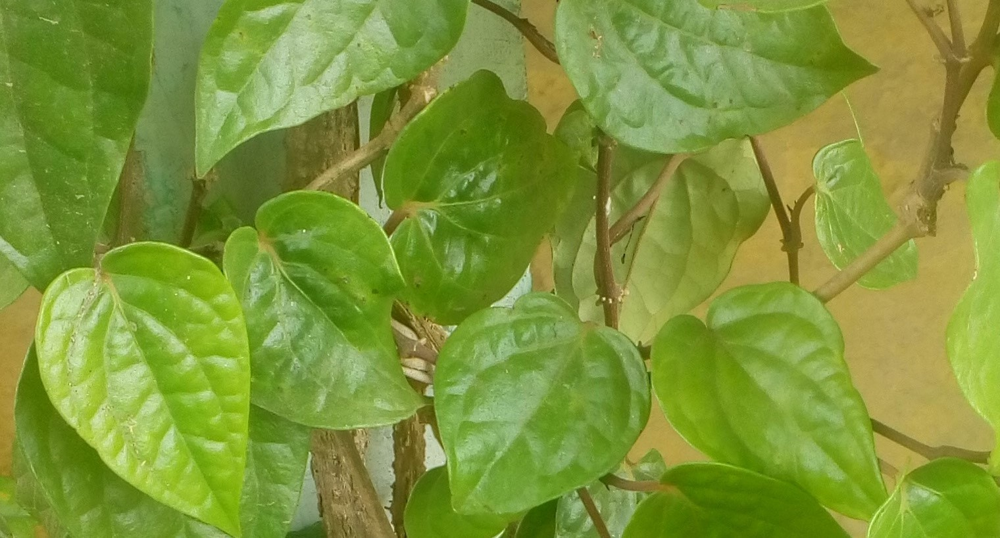

வெற்றிலை
வெற்றிலை பாக்கு சுண்ணாம்பு வால் மிளகையும் கூட்டிச்சுவைப்பதால் நன்கு சீரணம் உண்டாகும் பல் உறுதிப்படும். வெற்றிலையின் சாற்றைப் பிழிந்து கண்ணில் இட்டால் கண் வலியும் காதில் விட்டால் காது வலியும் நீங்கும்.
வெற்றிலை, சுக்கு, மிளகு இம்மூன்றையும் மென்று விழுங்கி வெந்நீர் குடித்தால் வாயு நீங்கும்.
கருப்பு பச்சை வெற்றிலை, கற்பூரவல்லி வெற்றிலை முதலானவற்றைத் தணலில் காட்டிச்சாறு பிழிந்து பூசினால் தலைவலி நீங்கும். வெற்றிலையில் எண்ணெயைப் பூசி, அகல் விளக்கில் இளஞ் சூட்டில் காட்டி நெஞ்சில் இட்டால் கபம், இருமல் விலகும்.
கறுப்புப் பச்சைக்கொடி வெற்றிலையுடன் மிளகையும் கருக்கி தேனில் கலந்து கொடுத்தால் வாய் குமட்டல், வாந்தி நீங்கும். வெற்றிலையுடன் ஓமம் சம எடைகூட்டி, இடித்து பிழிந்து அச்சாற்றுடன் தேன் கலந்து பருகினால் வயிற்றுப் பொருமலுடன் கூடிய வயிற்றுப்போக்கு நீங்கும்.
வெற்றிலைச் சாறுடன் தேன் கலந்து குடித்தால் நல்ல உடல் ஆரோக்கியம் கிடைக்கும். வெற்றிலைச் சாறுடன் உளுந்து, அமுக்கிராங் கிழங்கு ஆகிய இரண்டையும் சேர்த்து உண்டால் தாது விருத்தியும், உடல் வலுவும் ஏற்படும்.
வெற்றிலைக் காம்பின் மருத்துவம்:
வெற்றிலைக் காம்பினை மருந்துண்ட பின்பு வாயிலிட்டுச் சுவைத்தால் குமட்டலைத் தடுத்து வாந்தி வருவதை நிறுத்தும்.
வெற்றிலைக் காம்பு, மிளகு, சிறுகீரை, அவுரி ஆகியவற்றை நறுக்கி அரைப்படித் தண்ணீரில் கொதிக்க வைத்து அதை அளவோடு கொடுத்து வந்தால் எல்லாவிதமான நச்சுக்கடியும் நீங்கும். வயிற்றுப் புண்ணும் ஆறும்.
வெற்றிலையின் வேரின் மருத்துவம்:
வெற்றிலை வேரைத் தொடர்ந்து மெல்லுவதால் சங்கீத வித்வாங்கத்ன் சாரீரம் தெளிவடையும். வெற்றிலை வேர், கண்டங்கத்திரி வேர், ஆடாதொடை வேர் ஆகியவற்றைக் கசாயம் செய்து காலை மாலை குடித்து வ்ந்தால் எல்லாவகையான காச நோய்கள் தீரும். வெற்றிலைக் கொடியின் இளம் வேர்களை மிளகுடன் சேர்த்து உண்டால் பெண்கள் மலடாகி விடுவாடர்கள்.
வெற்றிலை ஒரு விஷம் நீக்கி:
தேள் கொட்டினால் ஒரு சிட்டிகை சீயக்காய்த் தூளை ஆண்களாக இருந்தால் பெண் கொடியிலிருந்தும் பெண்களாக இருந்தால் ஆண் கொடியிலிருந்தும் வெற்றிலையைக் கிள்ளி மடித்துக் கொடுத்தால் நச்சு இறங்கும். வலியும் குறையும். வெற்றிலையும், மிளகும் அரைத்து அதை பாக்களவு சாப்பிட்டு வெந்நீர் பருகினால் எல்லா விதமான நஞ்சுக்களும் முறிந்துவிடும்.
கோவைக்கீரை
கோவை இலையால் இருமல், வாத கோபம், பெருவீரணம், சிறு சிரங்கு, தேக சூடு, நீரடைப்பு முதலிய நோய்கள் குணமாகும்.
இக்கீரை கண்களுக்கு குளுர்ச்சியைக் கொடுக்கும். கோவை இலையை நெய் விட்டு அரைத்துச் சாதாரண மாசுக் காணும் புண்களுக்கும், அம்மையினால் உண்டான இரணங்களுக்கும் மேலே பூச புண் ஆறும்.

கோவைக் கீரை ஆழ்ந்த பச்சை நிறம் கொண்டது. மிகுந்த கசப்புத் தன்மை உடையது. நம் உணவில் எந்த வகையிலேனும் கசப்புத் தன்மையுள்ள உணவுகளை சேர்த்துக்கொள்வதால் அவை செரிப்பதற்க்கு பயன்படுகிறது.
இலையை கொதிக்கின்ற வெந்நீரில் 15 நிமிடங்கல் சென்ற பின் வடிகட்டி வேளைக்கு ஒரு பலம் வீதம் கொடுக்க உடல் சூடு, சொறி சிரங்கு, நீரடைப்பு, இருமல் போன்றவை நீங்கும்.
இலையை இடித்துப் பொடி செய்து திரிகடி பிரமாணமாகக் கொடுதாலும் மேற்குறிப்பிட்ட நோய்கள் நீங்கும்.இதனால் இரசவேக்காடும், சாந்தமாகும். இலையை எண்ணெயில் கொதிக்க வைத்து படை,சொரி சிரங்கு இவைகளுக்கும் பூசலாம்.
இவ்விலைச் சாற்றுடன் வெண்ணெய் சேர்த்துச் சொரி சிரங்குகளுக்கு பூசலாம். இதன் சாற்றை வியர்வை உண்டு பண்ணுவதற்கு உடலில் பூசுவதும் உண்டு. கோவை இலைச் சாற்றுடன் நல்லெண்ணெய் கூட்டிக் காய்ச்சி வடித்து படர் தாமரை புண்ணுக்குப் பூசலாம்.
ஆசன துவாரத்தில் காணும் எரிச்சல், இரணம் இவைகளுக்கு மேல் தடவிவர புண் குணமாகும். இலையோடு நெய் சேர்த்து வாட்டி கட்டிகளுக்கு இட கட்டிகள் பழுத்து உடையும். இவ்விலையை வாயில் மென்று சுவைத்தால் வாய்ப்புண ஆறும்.
இக்கீரையில் இருந்து எண்ணெய் காய்ச்சி எடுப்பதுண்டு. இவ்வெண்ணெய்க்கு மேக சஞ்சீவி எண்ணெய் என்று பெயர்.
கோவைப் பழம் வாய்ப் புண்ணை ஆற்றுவதோடு வயிற்றுப் புண்ணையும் ஆற்றும் தகுதி பெற்றது. கோவைப் பழத்தில் சிறந்த உணவுச் சத்துக்கள் அமைந்திருக்கின்றன. ஒரு பழத்தில் 96 விழுக்காடு உண்ணும் தகுதி பெற்றவை.
சதக்குப்பைக் கீரை
இக்கீரை உண்பதால் உடம்புக்கு மினுமினுப்பும் அழகும் உண்டாகிறது. குழந்தை பெற்ரற தாய்மார்களுக்கு நன்கு பால் சுரக்கும். கீரையின் சாற்றை கர்ப்பினி பெண்கள் அருந்தினால் உடல் தெளிவும் ஆரோக்யமும் கிடைக்கும்.
பெண்களுக்கு உண்டாகும் சூதகச் சிக்கல், குடலில் உண்டாகும் வாயு, செரிக்காமை, பசியின்மை ஆகிய தொல்லைகள் நீங்கும்.
இக்கீரை உண்பதனால் உடம்புக்கு மினுமினுப்பும் அழகும் உண்டாகிறது. குழந்தை பெற்ற தாய்மார்களுக்கு நன்கு பால் சுரக்க இந்தக்கீரை பயன்படுகிறது. இக்கீரையின் சாற்றை கர்ப்பம் தரித்த பெண்களுக்கு கொடுக்கலாம். இதனால் பெண்களுக்கு உடல் தெளிவும் ஆரோக்கியமும் கிடைக்கின்றன.
சதக்குப்பைக் கீரையினால் மகளிர்க்குண்டாகின்ற குடலில் சஞ்சரிக்கின்ற வாய்வு, செரிக்காமை, பசியின்மை ஆகிய நோய்கள் நீங்கும். இக்கீரையை உலர்த்தி சூரணம் பொடி செய்து சர்க்கரையுடன் கலந்து மூன்று சிட்டிகை உட்கொள்ள கபம், தலைவலி, காது வலி, மூலக்கடுப்பு இவைகள் தீரும். இக்கீரை பசியைத் தூண்டக்கூடிய சக்தி பெற்றது. பசி நன்கு எடுக்காதவர்கள் இக்கீரையைச் சேர்த்துக் கொள்வதனால் பசி நன்கு ஏற்பட்டு உணவை நன்கு சாப்பிடுவார்கள்.
இக்கீரை வாத நோய்களைக்கட்டுப்படுத்தும். ஈரல், நுரையீரல், இரைப்பை இவைகளிலுள்ள மாசுக்களை நீக்கிச் சுத்தப்படுத்தும். அவ்வுறுப்புகளின் சிக்கலையறுத்து வன்மையைக் கொடுக்கும். இலையை எண்ணெய் தடவி வதக்கிக் கட்டி, வீக்கங்களுக்குப் போடச் சீக்கீரம் பழுத்து உடையும் இலையைச் கசக்கி புண்களின் மீது வைத்தால் அவை குணமடையும்.
இந்தக் கீரையை உலர்த்திப் பொடி செய்து நோயாளிகளின் அறையில் புகை இடலாம். அப்புகையினால் காற்றில் பரவியுள்ள நோய் நுண்கிருமிகள் அழிக்கப்படுக்கிறன.
சதக்குப்பைப் பூவால் குழந்தைகளுக்கு ஏற்படும் மாந்தம், வாய்வுத் தொல்லை, வயிற்றுவலி, வயிற்று பொருமல் முதலியன நீங்கும். ஒரு பங்கு சதக்குப்பைப் பூ, இருபது பங்கு நீர் இதனைக் கசாயம் செய்து கொடுக்க குழந்தைகளுக்கு ஏற்படும் மாந்தம், பெரியவர்களுக்கு உண்டாகும் வயிற்று வலி, வயிற்றுப் பொருமல் முதலியன குணமாகும்.
தவசிக்கீரை
இக்கீரை மல்டி வைட்டமின் கீரை ஏனென்றால் இதில் A, B, B2, C சிறிதளவு D,K ஆகிய வைட்டமின்கள் நிறைந்திருப்பதனால். அத்துடன் இந்தக் கீரையில் தாது உப்புக்களும், புரதமும், மாவுப்பொருட்களும் மிகுந்த அளவு இருக்கின்றன.
இக்கீரையில் மணிச்சத்து நிறைந்திருக்கின்ற காரணத்தினால் எலும்பு மற்றும் மூளை வளர்ச்சிக்கு இக்கீரை பெரிதும் பயன்படுகிறது. கணக்கு சரியாக வராத மாணவர்கள் நாள் தோறும் இந்தக் கீரையை உணவுடன் சேர்த்து கொண்டால் சிறப்பாக கணிதப் பாடம் வரும் என்று கூறுவர்.
இக்கீரையில் இரும்புச்சத்து நிறைந்து இருப்பதனால் இரத்த விருத்தியும், உடற்கட்டும், உடல் செழுமையும் ஏற்படும். தவசிக்கீரையில் சிறப்பான உணவுச் சத்துக்கள் இருக்கின்றன.
இக்கீரை நூற்றுக்கு நூறு உணவாகப் பயனபடுகிறது. இதில் 73.6 விழுக்காடு நீர்ச் சத்தும் 68 விழுக்காடு புரதமும், 3.3 விழுக்காடு கொழுப்புச்சத்தும், 3.4 விழுக்காடு தாது உப்புக்களும், 1.4 விழுக்காடு நார்ச்சத்தும், 11.6 விழுக்காடு மற்றைய மாவுச்சத்துக்களும் நிறைந்திருக்கின்றன.
இக்கீரை 103 கலோரி வெப்ப ஆற்றலை கொடுக்க வல்லது. தாது உப்புக்களைப் பொறுத்த அளவில் நூறு கிராம் தவசிக்கீரையில் 570 மில்லி கிராம் சுண்ணாம்புச் சத்தும் 200 மில்லி கிராம் மணிச்சத்தும் 28 மில்லி கிராம் இரும்புச் சத்தும் இருக்கின்றன.
சக்திச் சாரணைக் கீரை
இக்கீரையால் ஆஸ்துமா, மாதவிடாய்ச் சிக்கல், கல்லீரல் வீக்கம் முதலியன குணமாகும். இக்கீரையினை நெய் விட்டு வதக்கி உண்டால் வீக்கம், குன்மம், வயிற்றுளைச்சல் முதலியன நீங்கும். மற்றும் மூல வாய்வு, சூசிகவாதம், முச்சுத்திணறல், மார்பு நோய் முதலிய நோய்கள் நீங்கும். இக்கீரை பசியை உண்டாக்கும்.
இதன் சாற்றை மூக்கில் பிழிய நீரோற்றம்,ஒற்றைத் தலைவலி முதலியன நீங்கும். இச்சாற்றைக் கண்ணில் விட கண் நோய்கள் யாவும் நீங்கும். கண் படலமும் அகலும். இச்சாற்றை மற்ற பானங்களுடன் கலந்து குடிக்க காமாலை வீக்கம், குன்மம், வயிற்றுலைச்சல் நீக்கும். இச்சாறானது வாதம், பித்தம், கபம் இம்மூன்றின் ஏற்றக் குறைவுகளால் உண்டாகும் கெடுதல்களை நீக்கும். இரத்த தோசங்கள் விலகும் பசி அதிகமாகும்.
சக்திச் சாரனை வேறுடன் கண்டக்கத்திரி வேர், வெள்ளை குன்றிமணி வேர், வெள்ளைப் பூண்டு, திப்பிலி, மிளகு முதலியன வகைக்கு 20 கிராம் எடுத்தரைத்து ஒரு குவளை நீரில் கலக்கி மாதவிடாய் ஆன நாள் முதல் மூன்று நாள் கொடுக்கக் கருத்தரிக்காமல் இருந்த பெண் கருவுற்றுக் கர்ப்பமடைவாள்.
சக்திச் சாரணை வேரினால் சீதளம், நீரேற்றம், தெமல், தடிப்பு, குன்மம், வாதவலி, சொறி சிரங்கு, பரமேகம், இருமல் ஆகிய நோய்கள் நீங்கும். கால் பலம் சக்திச் சாரணை வேருடன் கால் பலம் சுக்கு சேர்த்து குடிநீர் செய்து கொடுக்க மாந்தம் நீங்கும்.
கோழையகற்றி, மலமிலக்கி, சிறுநீர் பெருக்கி ஆகிய செயல்களைச் செய்யும் தன்மை கொண்டது. வித்திரிக் கட்டி, மூலவாய்வு, கண் படல ரோகம், மார்பு நோய், சுவாசரோகம், கர்ப்பத்தைச் சீனைப்படுத்துகின்ற சூசக வாதம் ஆகியன போக்கும்.
துத்திக்கீரை
இக்கீரையும், இதன் பூவும் வேரும் விதையும் மருந்தாகப் பயன்படுகின்றன இக்கீரை மூல வியாதியைக் கண்டிப்பதில் இனணயற்றது மூலம் வாய்ப்புண் வயிற்றுப்புண் இவ்வியாதிகளுக்கு துத்தி இலைக்கீரையைய்ச் சமைத்து புளி சேர்க்காமல் பகல் உணவில் ஒரு வேளை மட்டும் சாப்பிட்வேண்டும்.
துத்தி இலையைச் சிற்றாமணக்கு எண்ணெய் சிறிது விட்டு வதக்கி மூல நோய் உள்ளவர்களுக்கு ஆசனத்தில் வைத்துக்கட்ட இரண்டு அல்லது மூன்று வேளையில் கடுப்பு நீங்கும்.
இந்தக் கீரையில் தண்ணீர் 75 விழுக்காடு உள்ளது. 6.7 விழுக்காடு புரதச் சத்தும், 1 விழுக்காடு கொழுப்புச் சத்தும், 4.4 விழுக்காடு தாது உப்புக்களும், 7.9 விழுக்காடு மாவுப் பொருட்களும் இருக்கின்றன.
நூறு கிராம் கீரையில் 550 மில்லி கிராம் சுண்ணாம்புச் சத்தும், 117 மில்லி கிராம் மணிச் சத்தும், 11.3 மில்லி கிராம் இரும்புச் சத்தும் உள்ளன.
துத்தி இலையை ஆமணக்கு நெய்யில் வதக்கிக் கட்ட விரணமுளைகளும், கிருமி விரணமும், மூல நோயும் நிவர்த்தியடையும். வெப்பத்தால் உண்டான கட்டிகளுக்கு இக்கீரையை அரைத்து வைத்துக் கட்ட கட்டி உடைந்து சீழும் முளையும் வெளிவரும்.
பச்சரிசி அல்லது துவரம் பருப்போடு சேர்த்து சமைத்த கீரையைச் சோற்றுடன் சேர்த்து உண்ண மூலாதாரத்தில் உள்ள வாய்வைக் கண்டிக்கும். மலத்தை இளக்கும்.
கடுமையான சுளுக்குப் பிடித்த இடத்தில் துத்திக் கீரையை மேலிருந்து கீழ் நோக்கி மெதுவாக தேய்த்து ஒரு மணி நேரம் கழித்த பிறகு வெந்நீர் ஒத்தடம் கொடுத்தால் கடுமையான சுளுக்கு நீங்கும். இக்கீரையைக் காயவைத்துச் சிறது நீர் விட்டு அரைத்து குழந்தைகளுக்கு உண்டாகும் கபாலக் கரப்பானூக்குப் போடக் குணமாகும். இலை கசாயத்தினால் வாய் கொப்பளிக்க பல் மற்றும் ஈறுகளில் உண்டாகும் நோய்கள் நீங்கும்.
இலையை எந்த ரூபத்தில் உண்டாலும் வெப்பத்தால் உண்டாகும் எல்லா நோய்களும் நீங்கும். துத்திக் கீரையைக் கசாயமிட்டுப் பாலும் சர்க்கரையும் சேர்த்து உட்கொண்டால் மலச்சிக்கல், ஆசனக் கடுப்பு, மேகச் சூடு முதலியன தணியும். இலைச்சாறும் நெய்யும் சேர்த்து உண்ணப் பித்தத்தால் உண்டாகும் பேதி குணமாகும்.
துத்திப்பூ
இதன் பூவை உலர்த்தி பாலும் கற்கண்டும் சேர்த்து தேவையான அளவிற்குச் சாப்பிட்டு வர இரத்த வாந்தியும், பித்தகாசமும் நீங்கும். சுக்கில விருத்தியும் தேகக் குளிர்ச்சியும் உண்டாகும்.
துத்தி விதை
துத்தி விதையை பொடி செய்து சர்க்கரையுடன் கலந்து மிளகு அளவு காலையிலும், மாலையிலும் உண்டு வர கருமேகமும், உட்சூடும், குட்டமும் நீங்கும். விதையை கசாயம் செய்து மூலம், வெள்ளை வெட்டை, தந்தி வெள்ளை இவைகட்க்குப் பயன் படுத்தலாம்.
வேர்
இச்செடியின் வேருடன் திராட்ச்சை பழமும் நீரும் சேர்த்துச் சுண்டக் காய்ச்சி காலை, மாலை இருவேளையும் உண்டு வர மேகச்சூடு, நீர்ச்சுறுக்கு, வாதம் முதலியன தீரும்.
பாலக்கீரை
மருத்துவம்:
இக்கீரைக்கு நோய் எதிர்ப்பு சக்தி அதிகம் உள்ளது. பாலக்கீரையால் சிறுநீர்க் கடுப்பு, நீரடைப்பு, வெள்ளைப்படுதல், மற்றும் ருசியின்மை, வாந்தி ஆகிய நோய்கள் நீங்கும். உடல் சூட்டைத் தனிக்க வல்லது. தண்ணீர் தாகத்தையும் நாவறட்சியையும் போக்க வல்லது.
துவரம் பருப்போடு சேர்த்து செய்யப்பட்ட உணவை உண்பதனால் அதிக பித்தம், நீர் தாமரை சம்பந்தப்பட்ட நோய்கள் மேகம் , சீதபேதி ஆகியவைகள் குணமாகும். இதன் எண்ணெய் குடல் புழுவை அகற்றக் கூடியது.
அமிலம் மிகுதியால் ஏற்ப்படும் நெஞ்சுக் கரிப்பை நீக்க வல்லது. வயிற்றுப் புன்னை ஆற்றவல்லது. அல்சர் என்னும் குடல் புண்ணுக்குச் சிற்ந்த மருந்தாகும்.
ஊட்டச்சத்து
நூறு கிராம் கீரையில் 87 விழுக்காடு உண்ணும் தகுதி பொற்றவை. அதில் 92 விழுக்காடு நீரும் 3.6 விழுக்காடு புரதமும், 0.7 விழுக்காடு கொழுப்புச் சத்தும், 2.4 விழுக்காடு தாது உப்புக்களும் இருக்கின்றன. இதில் 0.6 விழுக்காடு நார்சத்தும் இருக்கிறது. 2.9 விழுக்காடு மாவுச்சத்தும் உள்ளது. சக்தியைக் கொடுக்கும் ஆற்றலில் இக்கீரை 26 கலோரி சக்தியை கொடுக்கவல்லது.
முடக்கத்தான் கீரை
முடக்கத்தான் கீரையை அரைத்துக் காலையில் நெல்லிக்காய் அளவு உண்ண காசம், சொறி, சிரங்கு, கரப்பான் போன்ற நோய்கள் குணமாகும். இதன் குடி நீர் குடலைச் சுத்தமாக்கி மலச்சிக்கலைப் போக்கும் ஆற்றல் பெற்றது.
முடக்கத்தான் இலையை விளக்கெண்ணெய் விட்டு அரைத்து சிறிது கருப்பட்டி சேர்த்துத்தின்ன குடலிறக்க நோய் குணமாகும்.
இடுப்புப் பிடிப்பு, இடுப்புக் குடைச்சல், கை கால் வலி, கை கால் குடைச்சல் முதலியனவற்றுக்கு முடக்கத்தான் கீரை மருந்தாக உதவுகிறது. இக்கீரை உடலுக்கு வலுக்கொடுக்கும் ஆற்றலைத் தன்னுள்ளே கொண்டுள்ளது. நிறந்த ஆற்றலையும் சக்தியையும் உடலுக்கு வழங்க வல்லது.
அதனால் நரம்பு சம்பந்தமான நோய்களை நீக்கும். இக்கீரையை முறையக உட்கொண்டு வந்தால் தசை நாரும் நரம்புகளும் வலுப்பெறும். இக்கீரையாய் வெல்லத்துடன் சேர்த்து நெய்விட்டு வதக்கி உண்ண கண்வலி நீங்கும். கண் சம்பந்தப்பட்ட நோய்களுக்கு இக்கீரை நல்லது.
இக்கீரையை நன்றாக அரைத்து வாத நோயால் பாதிக்கப்பட்ட உடல் பகுதிகளுக்கும், உடல் விரைப்புகளுக்கும் பூசினால் குணமாகும். இதனைப் பாலுடன் சேர்த்து அரைத்துக் கொப்புளங்களுக்கும், கட்டிகளுக்கும் தடவி வர குணமாகும்.
கீரையை வதக்கி பிழிந்து, சாற்றை இரண்டு அல்லது மூன்று துளிகள் காதில் வட காதுவலி, காது குத்தல் முதலியன நீங்கும்.
மூல நோய்களுக்கும் இக்கீரை சிறந்த மருந்தாகும். ஒரு பிடி முடக்கத்தான் கீரையை இடித்து ஒரு சட்டியில் போட்டு அரைப்படி நீர் விட்டு அரைக்கால் படியாக சுண்டக்காய்ச்சி வடிகட்டி ஒரு வேளைக்கு ஒரு அவுன்ஸ் வீதம் தினம் இரண்டு வேளை மூன்று நாள் கொடுக்க நரம்புகள் சம்பந்தமான வேக வாய்வு, மூச்சுப் பிடிப்பு, மூலம், கப சம்பந்தமான இருமல், மலச்சிக்கல் இவைகள் போகும்.
முடக்கத்தான் செடியின் இலையும் வேரும் மருந்தாக பயன்படுகிறது. இவை துவர்ப்பு, கசப்பு, வெப்பம், கார்ப்பு ஆகிய குணம் கொண்டது. இக்கீரை சிறுநீர்ப்பெருக்கி, மலமிளக்கி, பசித் தீ தூண்டி, உடல் உரமாக்கி, தடிப்புண்டாக்கி ஆகிய செயல்களைச் செய்யும். இலை வேர் முதலியனைவகைகளை கசாயம் இட்டு வாதம், மூலம், நாள்பட்ட இருமல் முதலியவகைகளுக்கு கொடுக்கலாம்.
மாதவிடாய் காலங்களில் அதிகமாகப் போகும் உதிறத்தைத் தடுக்க இக்கீரையின் சாற்றினை ஒரு மேசைக் கரண்டி அளவு உண்ண சமப்படுத்தும். இதன் விதையை உண்பதால் நினைவாற்றல் மிகச் சிறந்தது என மருத்துவர்கள் கருதுகிறார்கள்.
முட்டைக்கோசு கீரை
முட்டைகோசைத் தினம் பச்சையாக உண்டுவர உடல் இளமையும் மலர்ச்சியும் பெறும். முட்டைக்கோசுச் சாறுடன் சமபாகம் எழுமிச்சம்பழச் சாறு சேர்த்து 4 அவுன்ஸ் அளவு மூன்று வேளை உணவு நேரத்தில் பருக இளமை மலர்ச்சி பெறும்.
மிக்கச் சத்துள்ள இந்த சாற்றை எப்போதும் மற்றைய சாறுடன் கலந்துதான் பருக வேண்டும். சிறப்பாக கேரட் சாற்றுடன் பருகுவது மிகவும் நல்லது.
முட்டைக்கோசுச்சாறு, கேரட் சாறு மற்றும் வெள்ளரிச்சாறு மூன்றையும் சம அளவு கலந்து உணபதால் உடலில் நோய் எதிர்ப்புச் சக்தி அதிகம் ஏற்படுகிறது. அத்துடன் திசு அணுக்களை புதுப்பித்து அவைகளைஆற்றலுடயவையாகச் செய்கின்றது.
பசலைக்கீரை சாற்றுடன் முட்டைக்கோசுச் சாற்றைச் சம அளவு கலந்து உண்பது மலச்சிக்கலுக்கு ஒரு சிறந்த மருந்தாகும்.இது உடல் உள் உறுப்புக்களைச் சுத்தப்படுத்தப் பயன்படுகிறது.
இதில் 91.9 விழுக்காடு நீர் நிறைந்திருக்கிறது.கொழுப்புச் சத்தும் புரதச்சத்தும் முறையே 0.1 விழுக்காடும்,1.18 விழுக்காடும் இருக்கின்றது. நார்ப்பகுதியைப் பொறுத்த அளவிற்கு முட்டைக்கோசில் 1.0 விழுக்காடு அமைந்திருக்கிறது.மற்றைய மாவுப் பொருள்கள் 4.6 விழுக்காடு இந்தக் கீரையில் அடங்கியிருக்கிறது.இது கொடுக்கும் வெப்ப ஆற்றலின் அளவு 27 கலோரிகள் ஆகும்.
நூறு கிராம் கீரையில் தாது உப்புக்களைப் பொறுத்த வரையில் சுண்ணாம்புச்சத்து 39 மில்லி கிராமும், மக்னீசியம் 10 மில்லி கிராமும், ஆக்ஸாலிக் அமிலம் 3 மில்லி கிராமும், மணிச்சத்து 44 மில்லி கிராமும்,சாம்பல் சத்து 114 மில்லி கிராமும், செம்புச்சத்து 0.08 மில்லி கிராமும், கந்தச்சத்து 67 மில்லி கிராமும்,குளோரின் 12 மில்லி கிராமும் உள்ளன. உயிர்ச் சத்தின் முக்கிய சத்தான வைட்டமின் 2000 அனைத்துலக அலகு உள்ளது.தயாமின் 0.06 மில்லி கிராமும்,ரைபோஃபிளேவின் 0.03 மில்லி கிராமும், நிக்கோடினிக் அமிலம் 0.4 மில்லி கிராமும், வைட்டமின் சி 127 மில்லி கிராமும், கோலின் 120 மில்லி கிராமும் உள்ளன.
மூக்கிரட்டைக் கீரை
மூக்கிரட்டைக் கீரையைச் சமையலுடன் சேர்த்து வாரம் இரண்டு முறை உண்டு வந்தாலே உடலுக்கு வாய்வு சம்பந்தப்பட்ட நோய்கள் வராது.
இவ்வாறு உண்பதனால் இரத்தசோகை காமாலை போன்ற நோய்கள் உடலை அணுகாது. மேலும் இரத்த விருத்தி செய்து உடலுக்கு ஆண்மையையும் அழகையும் ஊட்டவல்லது.
கண் நோயை தீர்ப்பதில் இக்கீரை பொன்னாங்கண்ணிக்கு நிகரானது. பொன்னாங்கண்ணி கீரையைப் போன்றே இக்கீரையையும் நெய்விட்டு வதக்கி ஒரு மண்டலம் உண்டு வர கண் சம்பந்தப்பட்ட நோய்கள் நீங்கும். இக்கீரையால் மலச்சிக்கல் நீங்கும் உடல் சாந்தி பெறும்.
இக்கீரையால் மலச்சிக்கல் நீங்கும்.உடல் சாந்தி பெறும்.இக்கீரயை உணவாக சமைத்து ரொட்டி அல்லது சப்பாத்தி இவைக்களுடன் சேர்த்து உண்டுவர, மூட்டு நீர்க்கட்டு போன்ற வாதவலி நோய்கள் நீங்கும். நமைச்சல் வாத நோய்களை நிவர்த்தி செய்யும். நீர் தாராளமாகப் போகும். வாய்வைச் சரி செய்யும்.
மூக்கிரட்டை வேர் வாந்தியையும், பேதியையும் உண்டாக்கக் கூடியது. அதனால் இவ்வேரினால் தயாரிக்கப்படும் எணணெயானது குழந்தைகளின் வயிற்றில் இருக்கும் மலப்புற திமிர் பூச்சி முதலியவற்றை வேர்கள் மூலம் வெளியேற்றிவிடும்.
மூக்கீரைட்டை வேர், மிளகு, உந்தாமணி இலைச்சாறு இவைகளைச் சேர்த்து தயாரிக்கப்பட்ட எண்ணெய் குழந்தைகளுக்கு ஏற்படும் காமாலை, கப இருமல், சளி, மாந்த இழுப்பு முதலியவற்றிற்குச் சிறந்த மருந்தாகும்.
குழந்தைக்களுக்கு அடிக்கடி காய்ச்சல், சளி வருவதுண்டு அப்படி வரும் குழந்தைக்களுக்கு இவ்வெண்ணெய் வாரம் இரு முறை கொடுத்து வர வேண்டும். அவ்வாறு கொடுத்துவரும்போது தாய்ப்பால் ஊட்டும் தாய் இச்சா பத்தியம் இருக்க வேண்டும்.
வளரும் குழந்தைக்களுக்கு பெரும்பாலும் ஈரல் நோய் வருவதுண்டு. இதனால் போதிய இரத்தம் உடலில் உற்பத்தியாகாது. இரத்தத்தில் சிகப்பு ம்ற்றும் வெள்ளை அணுக்கள் குறைந்துவிடும். அதனால் கைகால்கள் வீங்கிச் சோகை, காமாலை போன்ற நோய்கள் வரக்கூடும். இதனை தடுப்பதற்கும் கைக்கால் வீக்கம் நீங்குவதற்கும் மூக்கீரட்டை வேர் பயன்படுகிறது.
மூக்கீரட்டை வேர் கீழ் வாதம் எனப்படும் மூட்டு வலி, மூச்சடைப்பு, எனும் ஆஸ்துமா, மூச்சுதினறல், கப இருமல் முதலிய நோய்களுக்குச் சிறந்த மருந்தாகும். மூக்கீரட்டை வேர் ஒரு கைப்பிடி, அருகம்புல் ஒரு கைப்பிடி, குருமிளகு பத்து ஆகியவற்றை ஒரு மண்பாண்டத்திலிட்டு இரண்டு குவளை நீர் சேர்த்து பாதியாக சுண்டவைத்து வடிக்கட்டி அந்நீரை நாள்தோறும் மூன்று வேளை உண்டு வர மேற்சொல்லப்பட்ட நோய்கள் நீங்கும்.
இந்நீருடன் இரண்டு கொத்து கீழாநெல்லி ஒரு பிடி நெருஞ்சிச் செடியும் உடன் சேர்த்து குடிநீர் செய்து நாள் தோறும் இரண்டு வேளை உண்டு வர காமாலை, நீரேற்றம், சோகை, வீக்கம், நீர்க்கட்டு, மகோதரம் எனும் பெருவயிறு முதலிய நோய்கள் நீங்கி நலமுண்டாகும். வேரை உலர்த்தி இடித்து பொடி செய்து வைத்துக்கொண்டு காலையும், மாலையும் ஒரு சிட்டிகை அளவு தேனில் கலந்து உண்டு வர மாலைக்கண், கண் படலம், கண் பார்வை, மங்கல் போன்றவை நீங்கி கண் பார்வை நன்கு தெரியும்.
விழுதிக் கீரை
இந்தக் கீரையானது வாத நாராயணி கீரைக்கு நிகரானது. வாத வீக்கங்களை கரைக்க வல்லது. வாத நீரை வெளியேற்றும் ஆற்றல் பெற்றது. மலத்தை நீராக்கி வெளிதள்ளும்போது வாத நீரையும் வெளியேற்றும்.
இந்தக் கீரையின் மிளகு இரசத்தால் அக்கினி மந்தத்தால் உண்டான பசி மந்தம் நீங்கி,நல்லபசி உண்டாகும். செரிமான உறுப்புக்களைச் சரிவர இயங்க வைத்து உணவுப் பொருட்ளை நன்கு செரிக்கச் செய்யும்.
விழுதிக் கீரை இரசத்துடன் இஞ்சி, கொத்தமல்லி, புதினா, கருவேப்பிழை சேர்த்து பூண்டு மற்றும் மிளகுடன் சிறிது ஆமணக்கு எண்ணெய் விட்டுத் தாளிதம் செய்து தாராளமாகக் குடிப்பதால் மேலே சொல்லப்பட்ட நோய்கள் எல்லாம் விலகும். வாரம் இரண்டு முறை இவ்வாறு இரசத்தைச் சேர்த்து வந்தால் போதுமானது. உடல் நலத்திற்கு ஏற்றது.விழுதிக் கீரையை இரண்டு கைப்பிடி அளவு எடுத்து ஒரு லிட்டர் தண்ணீரிலிட்டு அரை லிட்டராகும்படி சுண்டக் காய்ச்சி அதில் ஐம்பது கிராம் சிற்றாமணக்கு எண்ணெய் விட்டுக் கலந்து ,காலை வெறும் வயிற்றில் கொடுக்க, நன்கு பேதியாகி பழைய மலம் வெளிப்பட்டு குடல் சுத்தமும்,உடல் சுத்தமும் ஏற்படும். இப்பேதி முறை மூல நோய் உடையவர்களுக்குச் சிறந்ததாகும். அன்றியும் இப்பேதி முறையால் வெண்குவிழுட்டம், கழலைக் கட்டிகள் விலகும்.
மேலும் வாத நீர், பித்த நீர் முதலியன இந்த பேதி முறையால் மலத்துடன் நீங்கி தேகம் சுகம் பெறும். அன்றியும் இப்பேதி முறையால் மலக்கிருமிகளால் ஏற்படும் மூலக்குடைச்சல் நிவர்த்தியாகும். மலக்கிருமிகளும் மலத்துடன் வெளியேறிவிடும். இம்முறையால் கடுவன்,கரப்பான்,மலச்சிக்கலால் ஏற்படும் சொறி,சிறங்குகள் நீங்கிவிடும். வாதத்தால் வந்த சூலை நோயும் குணமாகும்.
விழுதிக் கீரையை விளக்கெண்ணெய் விட்டு வதக்கி வாதவீக்கக் கட்டிகள், சொறி, சிறங்கு, . இவைகளுக்கு இரவில் வைத்துக் கட்டி வர ஒரு வாரத்தில் இவை யாவும் குணமாகும். இந்த இலைச்சாறும் நல்லெண்ணெய்யும் வகைக்கு இரண்டு முதல் இரண்டரைப் பலம் வீதம் கூட்டிக் கலந்து காலையில் உட்கொள்ள பேதியாகும். இப்படி மூன்று நாள் சாப்பிட்டால் இடுப்பு வலி, காலசதி நீங்கும்.
வெண் குட்டம் என்று சொல்லப்படுகின்ற தோல் வெண்மை நோய்க்கு வாரமிருமுறை விழுதி இரசத்தைச் சேர்த்து கொண்டு வர வேண்டும். அத்துடன் விழுதிக் காயை வற்றலிட்டு இரவு நேர உணவில் சேர்த்துக் கொண்டு வர வேண்டும். மேலும் கீரையை உலர்த்திப் பொடி செய்து தேங்காய் எண்ணெய் விட்டுக் குழப்பி வெள்ளையான இடங்களில் பூசி வர வெண்மை நிறம் மாறிவிடும்.
வேளைக்கீரை
சீதனத் தொடர்புடைய நோய்களை நீக்கும். சீதனத்தை தணித்து உடல் சூட்டை உருவாக்கும். இக்கீரை அதிக பசியை உண்டாக்கும்.
நெஞ்சுக்கரிப்பு, பித்த நீர் சம்மந்தப்பட்ட நோய்களுக்கு தீர்வாகும்.
கட்டிகள் சீழ் பிடிக்காமல் இருப்பதற்கு இக்கீரையை பயன்படுத்தலாம். சீதனத்தால் உண்டாகும் கொடிய தலை நோய்க்கு இலையைச் சிதைத்து சாற்றைப் பிழிந்து திப்பியை உச்சியில் வைத்து அதற்கு மேல் புப்பானை ஒட்டை வைத்துத் துணியால் இறுக்கிகட்ட ஒரு வித விறுவிறுப்பு உண்டாகும். ஐந்து முதல் பத்து நிமிடங்களுக்குப் பிறகு கட்டையவிழ்த்து இலைத் திப்பியைப் பிழிய நீர் வடியும். தலைப் பாரம் நீங்கும்.
வேளைக் கீரை அதிக பசியை உண்டாக்கக் கூடியது. உணவு செரிமானமாகாமலும் பசி இல்லாமலும் இருப்பவர்களுக்கு இந்தக் கீரையை உணவுடன் சேர்த்துக் கொடுக்கலாம். உணவு நன்கு சீரணமாவதுடன் நல்ல பசியும் ஏற்படும்.
இலைகளைக் கசக்கி நரம்பு வலி, மூட்டு வலி, வாதவலி, தலைவலி, முதலியவற்றிற்குப் பயன்படுத்தலாம். கட்டிகள் சீழ் பிடிக்காமல் காப்பதற்கு இந்தக் கீரையைக் கட்டாகப் போடலாம். தொடர் இருமல் மற்றும் மூச்சடைப்புக்கு இக்கீரைபயன்யை உள்ளுக்குக் கொடுக்கலாம். வேளைக் கீரையின் சாற்றை மருந்தாகப் பயன்படுத்துக்கின்றனர்.இலையைப் பிழியும் போதோ அல்லது அரைத்துச் சாறு எடுக்கும் போதோ நீர் சேர்க்கக் கூடியது.
கீரைச்சாற்றுடன் எண்ணெய் சேர்த்து இளஞ்சூடாக்கிக் கை பொறுக்கும் அளவிற்கு காது வலிக்கு மருந்தாகப் பயன்படுத்தலாம்.சீழ் வடியும் காதில் இரு துளிகள் விட சிறிது நேரத்தில் எரிச்சல் உண்டாக்கிய பிறகு அடங்கிவிடும். இவ்வாறு காலை மாலை இரு வேளையும் ஆறு நாட்கள் விட காதில் சீழ் மற்றும் துர்நாற்றம் இவைகள் நீங்கிவிடும். இது எரிச்சல் உண்டாக்கும் தன்மையுடையது. ஆதலால் எச்சரிக்கையாக கையாள வேண்டும். நெஞ்சுக்கரிப்பு ம்ற்றும் பித்த நீர் சம்பந்தபட்ட நோய்களுக்கு இந்தக் கீரையைப் பயன்படுத்துக்கின்றனர்.
அகத்திக்கீரை
சரியாக பால் சுரக்காத தாய்மார்கள் தொடர்ந்து அகத்திக்கீரையைச் சாப்பிட்டால் நன்றாக பால் சுரக்கும். மூளை தொடர்பான பிணிகள் உள்ளவர்கள் இக்கீரையை உண்பதன் மூலம் நிவாரணம் கிடைக்கும்.
அகத்திக் கீரையில் 62 வகைச் சத்துக்கள் அடங்கியுள்ளதாக நம் பண்டையச் சித்தர்களும் மருத்துவ நூற்களும் கூறியிருக்கின்றனர். பொதுவாக இந்தியாவிலும், குறிப்பாகத் தென்னாட்டிலும், விரதம் இருப்பது ஒரு கோட்பாடாகக் கொள்ளப்பட்டு வருகிறது.
இவ்வாறு விரதம் இருந்து முடிப்பவர்கள் உண்ணும் உணவில் முதல் ஒரு கைப்பிடி அளவிலேயே நூறு விதச் சத்துக்கள் அடங்க்கிய உணவை உண்ண வேண்டும் என்று வைத்திய நுல்கள் குறிப்பிடுகின்றன. ஓரு கைப்பிடி உணவில் நூறு விதச் சத்துக்களைப் பெரும். வ்ழியை மருத்துவ நுல்கள் கீழ்க்கண்டவாறு குறிப்பிடுகின்றன.
| அகத்திக்கீரை | 63 சத்துக்கள் |
|---|---|
| சுண்டக்காய் | 30 சத்துக்கள் |
| வாழைக்காய் | 3 சத்துக்கள் |
| கொத்தவரை | 1 சத்துக்கள் |
| அரிச்சோறு | 1 சத்துக்கள் |
| பருப்பு | 1 சத்துக்கள் |
| நெய் | 1 சத்துக்கள் |
| ஆக மொத்தம் | 100 சத்துக்கள் |
இந்த ஏழு உணவுப் பொருட்களிலும் நூறு விதச் சத்துக்களும் அடங்கிவிட்டதைக் காணலாம்.
அகத்திக் கீரை முதல் கீரையாக நின்று அரைபத்து மூன்று வ்கைச் சத்துக்களைப் பெற்று விளங்குவதைக் காணலாம். இக்கீரையில் அடங்கியுள்ள புரதச்சத்து மிகச்சிறந்த புரதமாகக் கருதப்படுகிறது.சுண்ணாம்புச் சத்து, இக்கீரையில் அதிக அளவில் உள்ளது. இது பல் மற்றும் எலும்பு வளர்ச்சிக்கு உதவுகிறது. அகத்திக் கீரையில் 73 விழுக்காடு நீரும்,8.4 விழுக்காடு புரதமும்,1.4 விழுக்காடு கொழுப்பும்,3.1 விழுக்காடு தாதுப்புக்களும் இருக்கின்றன.இதில் 2.2 விழுக்காடு நார்ச் சத்தும் இருக்கிறது. மாவுச் சத்து 11.8 விழுக்காடு இந்தக் கீரையில் இருப்பதை விஞ்ஞனிகள் கண்டறிந்துள்ளனர்.
அகத்திக் கீரை பொதுவாக சிறிது கைப்பு உருசி உடையது. இக்கைப்புச் சுவை குடலில் உண்டாகும் நச்சு நீரை முறித்து வெளியேற்றும் குணமுடையது. குடலில் தேங்கும் மலம் மற்றும் நிணநீர் ஆகிய அசுத்தங்களைச் சுத்தம் செய்யும் ஆற்றல் பெற்றது. மலச்சிக்கலை நீக்கி மலத்தை உடைத்து வெளியேற்றும் தன்மை பெற்றது.. இக்கைப்புச் சுவை பித்தச் சூட்டையும் தணிக்கவல்லது.குடல் புண், அரிப்பு, சொறி சிறங்கு,முதலிய நோய்கள் இக்கீரையை உணவாக உண்பதால் குணமாகும்.
தொண்டைப் புண் மற்றும் தொண்டை வலிக்கு அகத்திக் கீரையைப் பச்சையாக மென்று சாற்றை உள்ளே விழுங்க இந்நோய்கள் நீங்கும். இரத்தப்பித்தம், இரத்தக்கொதிப்பு, உட்காங்கை என்னும் சூட்டின் நோய் ஆகியவை அகத்திக் கீரை உண்பதனால் அகலும்.இக்கீரை காய்ச்சலைக் குறைத்து உடல் சூட்டை சமன்படுத்தும் இயல்புடையது. அகத்திக் கீரை, நாம் உண்ணும் உணவை நன்றாகச் ஜீரணிக்க உதவுகிறது.
நீர்க்கோவைக் காரணமாகத் தோன்றும் தும்மல் போன்ற நோய்களுக்கு அகத்திக் கீரையின் சாற்றையும், அகத்திப் பூவின் சாற்றையும் சம அளவு கலந்து மூக்கில் இரண்டொரு சொட்டு விட்டு வந்தால் நோய்கள் நீங்கும். பொதுவாக நீர் கோவைக்கு அகத்தி இலைச்சாற்றுடன் சம அளவு தேன் கலந்து உள்ளுக்குச் சாப்பிட நல்ல குணம் கிடைக்கும். அடிப் பட்டு கன்றிப் போன வீக்கங்களுக்கு அகத்திக்கீரையை அரைத்துச் சுட வைத்து பற்றாகப் போட்டால் சிறந்த குணம் கிடைக்கும்.அகத்திக இலைச் சாற்றை நெற்றியில் தடவி, அனலில் ஆவி பிடிக்கக் கடுமையான தலைவலி நீங்கும். மலேரியா போன்ற காய்ச்சல்களுக்கு அகத்தி இலைச் சாற்றை ஒரு நாளைக்கு ஒரு தடவை இரண்டொரு துளிகள் மூக்கில் விட காய்ச்சலின் வேகம் குறைந்து குணமடையும்.
சரியாக பால் சுரக்காத தாய்மார்கள் தொடர்ந்து அகத்திக் கீரையைச் சாப்பிட்டு வந்தால் நன்கு பால் சுரக்கும். மூளை தொடர்பான பிணிகள் உள்ளவர்களும் அகத்திக்கீரையை உண்பதன் மூலம் நல்ல பலன் பெறலாம். அகத்திக் கீரையிலிருந்து ஒரு வகைத் தைலம் எடுக்கப்படுகிறது.இந்த அகத்தித் தைலத்தை தேய்ப்பதினால் கண் குளிர்ச்சி அடையும், பார்வை தெளிவாகும். மயிர் செழித்து வளரும். அகத்திப் பூவின் சாற்றைக் கண் பார்வைக் குறைவை நீக்குவதற்குப் பயன்படுத்துக்கிறார்கள்.
அகத்தியின் பட்டையைப் பெரியம்மை எனப்படும் ,வைசூரி, நோய் காணப்பட்டால் அத்ன் ஆரம்ப காலத்தில் கொடுக்கலாம். அம்மை நோயின் வேகத்தைத் தணிப்பதற்கு விதிப்படி குடிநீர் செய்து கொடுக்கலாம். அகத்தி வேர் ஒர் சிறந்த மருந்தாக விளங்குகிறது. அகத்தி வேர் பட்டை விதிப்படி குடிநீர் செய்து உட்கொள்ள மேகம், தாகம், மெய் எரிவு,கை எரிவு, ஆண் குறியின் உள் எரிவு, ஐம்பொறிகளைச் சேர்ந்த எரிவு ஆகியவைகள் நீங்கும்.
இவ்வளவு சிறந்த மருத்துவ பயனுடைய இக்கீரையை அடிக்கடி உண்டாலோ நாள் தவறாமல் சேர்த்துக் கொண்டாலோ நன்மைக்குப் பதில் தீமையே அதிகமாகும். இவ்வாறு உண்பதனால் உடலிலுள்ள நல்ல இரத்தத்தையெல்லாம் முறித்து வாய்வைப் பெருக்கிச் சோகை, பாண்டு முதலிய நோய்களை உண்டாக்கும். அகதிக்கீரையை அதிகம் உண்டால் கடுமையான வாயுவும் உண்டாகும். அகத்திக்கீரை பத்தியத்தை முறிக்க வல்லது. ஆதலால் மருந்துண்ணும் காலங்களிலோ பத்தியமிருக்கும் போதோ அகத்திக் கீரையை உண்ணக் கூடாது. ஆகையினால் இக்கீரையை நாள்தோறுமின்றி வாரம் ஒரு முறையோ அல்லது இரண்டு வாரத்திற்கு ஒரு முறையே இக்கீரையை உணவுடன் சேர்த்துக் கொள்வது நல்லது.
அரைக்கீரை
இக்கீரை நரம்பு சம்மந்தப்பட்ட நோய்களுக்கு மருந்தாக பயன்படுகிறது. பிடரி நரம்பு வலித்தல், நரம்பு வலி, தலைவலி, நரம்பு புடைப்பு ஆகியவைகளுக்கு குணமளிக்கும்.
நோயால் தளர்வுற்ற உடலுக்கு வலுவும் பலனும் அளிக்கும். அரைக்கீரையை நாள்தோறும் உணவுடன் சேர்த்து உண்டு வர உடலுக்கு அழகும் வலுவும் கொடுக்கும்.
இக்கீரையை கறியாக்கி உண்ண காய்ச்சல், நடுக்கம், சன்னி, கபரோகம், வாத நோய் ஆகிய நோய்கள் நீங்கும். தாது விருத்திக்கும் இக்கீரை பத்திய பதார்த்தமாக வழங்கப்படுகிறது. இந்த கீரை உடலுக்கு வெப்பத்தைக் கொடுப்பதனால் மகப்பேறு பெற்ற் தாய்மார்களுக்கு ஒரு முக்கிய உணவாகக் கருதப்படுகிறது. பிரசவித்த பெண்களுக்குச் சீதளம் வராமல் இக்கீரையில் அடங்கியுள்ள சத்துக்கள் பாதுக்காக்கின்றன.
அரைக் கீரையை மிளகு இரசத்துடன் உண்ண நோய்களைக் கண்டித்து, நல்ல குணமளிக்கும். மேலே குறிப்பிட்டபடி அக்கீரையுடன் துவரம் பருப்பு உலர்ந்த மிளகாயும் சேர்த்து தாளிதம் செய்த அவியலால் இருமல், கப இருமல், போன்ற நூரையீரல் காய்ச்சல்களைக் கண்டிக்க வல்லது. இந்தக் கீரையுடன் பெருங்காயமும், வெங்காயமும்,சேர்த்துச் செய்த பொரியலானது சல தோசம்,சன்னி பாதகரம், குளிர்க்காய்ச்சல் ஆகியவைகளை நீக்கும்.
வாதம், வாய்வு, வாய்வு சம்பத்தப்பட்ட உடல் வலிகள் இவைகளுக்கு சுக்கு,பூண்டு, மிளகு, பெருங்க்காயம், இக்கீரையுடன் சேர்த்து குழம்பு அல்லது பொரியல் செய்து உண்டால் அந்த நோய்கள் குணமாகும். இக்கீரையை நாள் தோறும் உண்டு வர எந்த விதமான கெடுதலையும் உண்டாக்காது. தினந்தோறும் உண்ணும் கீரையில் அரைக் கீரை முதலிடத்தைப் பெறுகிறது. இதனால் தான் மகப்பேறு பெற்ற தாய்மார்களுக்கு முதன் முதலில் கொடுக்கும் உணவு அரைக்கீரை உணவாக அமைந்துவிடுகிறது.
நீர்க்கோர்வை, குளிர் சுரம், வாத சுரங்கள், கப சுரம், சளி இருமல்,ஆகியவைகளை அரைக்கீரை போக்கும் குணமுடையது. இக்கீரை சுக்கில தாதுவை வலுப்படுத்தி உடல் பலத்தைப் பெருக்குவதில் தூதுவளைக் கீரைக்கு நிகரானது. உடலில் தேங்கும் வாய்வு, வாத நீர்களைப் போக்குவதில் முருங்கைக் கீரைக்குச் சமமானது. இந்தக் கீரை நரம்பு சம்பந்தப்பட்ட நோய்களுக்கு ம்ருந்தாகப் பயன்படுத்துக்கிறார்கள். பிடரி நரம்பு வலித்தல், மண்டை பீனிச, நரம்பு வலி, சன்னி, தலைவலி, கள்ள நரம்பு புடைப்பு ஆகியவைகளுக்கு இக்கீரை பெருங்குணமளிக்க வல்லது.
மாதவிடாய் காலத்தில் சேர்ந்து சேர்க்கையால் வரும் சூதக சன்னிக் கோளாறுகளை அரைக்கீரையுடன் மூலம் குணமாக்கிக் கொள்ளலாம். தீய வழிகளில் உடல் சக்தியை இழந்தவர்களுக்கு இக்கீரை அரும் மருந்தாகவும் உதவும் நண்பனாகவும் இக்கீரை திகழ்கிறது. இக்கீரையை உணவுடன் சேர்த்துக் கொள்வதால் தலை மயிர் நன்றாக கறுத்து வளரும்.
கரிசலாங்கண்ணி
உடல் கனத்தையும் பருமனையும் தொந்தியையும் கரைக்க விரும்புபவர்கள் நாள் தோறூம் பகல் உணவில் இரண்டு முதல் நான்கு வாரம் தொடர்ந்து இக்கீரையை உண்டு வர நல்ல பலன் கிடைக்கும்.
இக்கீரை சாற்றினால் செய்யப்படும் கண்மையும் மிகச்சிறந்த கண்மையாகும்.இந்தக் கண்மையைக் கண் இமைகளுக்குத் தீட்டிவர கண்கள் மிக்க ஒளி பெறும் கண்கள் கவர்ச்சியுடையவனாக விளங்கும். இந்தக் கீரையின் சாறு சிறந்த மருந்தாகப் பயன்படுகிறது. இந்த சாற்றை குழந்தைகளுக்கு கொடுக்கச் சளி, நிர்க்கோவை, போன்றவைகள் குணமாகும். நலலெண்ணெய் அல்லது தேங்காய் எண்ணெயுடன் சேர்த்துக் காய்ச்சப்பட்ட இந்த இலையின் சாற்றைத் தலைவலி முதலியவற்றிற்குத் தேய்க்கலாம்.
இவ்வாறு காய்ச்சப்பட்ட எண்ணெய் தலைமுடியை கருமையாக்குவதற்கும். முடி நிறைய வளர்வதற்கும் பயன்படுகிறது. இச்சாற்றுடன் நல்லெண்ணெயைக் கலந்து யானைக்கால் நோய்களுக்கு மேலே பூசப் பயன்படுத்துக்கின்றார்கள். இந்தச் சாற்றை ஈறுகளின் மீது தடவ பல் வலி நீங்கும். இருமல், காய்ச்சலுக்கு இந்த இலையின் சாற்றில் ஒரு தேக்கரண்டி அளவு கொடுக்க அவைகள் கட்டுப்படும். இந்த இலைச்சாறு ஆஸ்துமா வியாதிக்கும், வாதத்திற்கும் நல்ல மருந்தாகும். இது தேள்கடி மருந்தாகவும் பயன்படுகிறது.
தேள்கடிக்கு கடிவாயிலில் இந்த இலையின் சாற்றைப் பூச வலி கட்டுப்படுத்தப்படுகிறது. இந்த இலையின் சாறு கால்நடைகளுக்கு ஏற்படும் கொப்புளங்களுக்கும், புண்களுக்கும், கிருமிநாசினியாகப் பயன்படுகிறது இச்செடியின் வேரும் ஒரு சிறந்த மருந்தாகப் பயன்படுகிறது. இச்செடியின் வேரிலிருந்து எடுக்கப்படும் சாறு வாந்தி எடுக்கச் செய்யும் வாந்தி மருந்தாகப் பயன்படுகிறது. அத்துடன் பேதி மருந்தாகவும் பயன்படுகிறது. கால்நடைகளுக்கு கால் இடுக்குகளிலும், கழுத்து பகுதிகளிலும் ஏற்படும் புண்களுக்கு இதன் வேர் மருந்தாகப் பயன்படுகிறது. அத்துடன் பேதி மருந்தாகவும் பயன்படுகிறது.
மஞ்சள் கரிசலாங்கண்ணிக் கீரையை உண்பதனால் கல்லீரல், மண்ணீரல், நூரையீரல், சிறுநீரகம், ஆகிய உறுப்புகளுக்கு நன்மை பயக்கிறது. இந்த உறுப்புக்களில் தேங்கும் கழிவுகளை நீக்கிக் கெட்ட நீர்களை வெளியேற்றுகிறது.
இக்கீரையை உண்பதனால் சுரப்பிகளைத் தூண்டி பித்தநீர் மற்றும் உடலுக்குத் தேவையான நீர் உற்பத்தியாவதற்கான ஆக்கத்தையும், ஊக்கத்தையும், உடலுக்குக் கொடுக்கிறது. அந்த உறுப்புக்களுக்குச் சக்தியையும் ஊட்டத்தையும் அளித்து உறுப்புகள் நன்கு செயல் படுவதற்கு இக்கீரை உதவுகிறது. கல்லீரல், மற்றும் மண்ணீரல் பழுதடையும்போதும், பித்த நீர் சரிவர உற்பத்தியாகாத போதும், இரத்தத்தின் இயற்கை நிறம் மாறி மஞ்சளாகிவிட்ட போதும் உண்டாகக் கூடிய காமாலை இரத்தம் குன்றி உடல் வெளுக்கும் சோகை, பித்த பாண்டு, நீரேற்றம், நீர்க்குழுவான், மகோதரம், குண்மம், பித்த பாண், வீங்கிப் பெருகும் ஊதல் காமாலை ஆகியவற்றிற்கும் இக்கீரை மருந்தாகப் பயன்படுகிறது.
கண்ணொளி மங்கும்போது இந்தக் கீரை மருந்தாகப் பயன்படுகிறது. இக்கீரையை உணவோடு சேர்த்து உண்பதனால் உடம்பில் முக்கிய கெட்ட நீர்கள் வெளியேறுகின்றன. உடல் வளம் பெறுகிறது. மலச்சிக்கல் நீங்கப் பெற்று உடல் நலம் பெறுகிறது.
பாம்புக்கடி நஞ்சுக்கு இந்தக் கீரை நல்ல மருந்தாகும். இக்கீரையின் சாற்றை அரை அவுன்ஸ் எடுத்து அத்துடன் அரைகுவளை புளித்த மோர் கலந்து குடிக்க பாம்புக்க்டி விஷம் நீங்கிவிடும். மஞ்சள் காமாலை நோய்க்கு நாள்தோறும் இக்கீரையின் சாற்றினை எடுத்து முதல் நாள் அரை அவுன்ஸ் தொடங்க வேண்டும். இவ்வாறு தினம் அரை அவுன்ஸ் அதிகம் கூட்டிக் குடித்துக் கொண்டுவர வேண்டும். பத்தாவது நாள் இரண்டரை அவுன்ஸ் குடிக்க வேண்டும். பதினொன்றாம் நாளிலிருந்து அரை அவுன்ஸ் குறைத்துக் கொண்டே வர வேண்டும். இருபதாவது நாளில் கால் அவுன்ஸ் குடித்து நிறுத்தி விட வேண்டும். இவ்வாறு மருந்து குடிக்கும் 20 நாட்களிலும் புளி, காரம், கடுகு, நல்லெண்ணெய் ஆகியவை நீக்கிய இட்சா பத்தியமாக இருந்து வர வேண்டும். இவ்வாறு பத்தியமிருந்து இக்கீரைச் சாற்றை முறைப்படி குடித்து வர தீராத கடும் காமாலையும் தீர்ந்துவிடும்.
கறிவேப்பிலை
கரிவேப்பிலை ஈர்க்கின் புறணியை முளைப்பாலிட்டு இடித்துப் பிழிந்து கிராம்பு, திப்பிலி சேர்த்துக் கொண்டு மூன்று முறை குழைந்தைகளுக்கு ஊட்ட வாந்தி நிர்க்கும். பசி மற்றும் உணவு உண்ணும் வேட்க்கையை பிருதிப்படுத்தும்.
கரிவேப்பிலையால் குமட்டல் சீதபேதியாக வ்ரும் வயிற்று உபாதை நாட்பட்ட காய்ச்சல் நீங்கும். இக்கருவேப்பிலையால் பித்த மிகுதியால் வந்த பைத்திய நோய்களும் விலகும்.
கறிவேப்பிலை இலை சிறிது கார்ப்புத் தன்மையுடையது. இக்கீரை உடலுக்குப் பலம் உண்டாக்கக் கூடியது. பசியைத் தூண்டும் சக்தி வாய்ந்தது. பித்தத்தைத் தணித்து உடல் சூட்டை ஆற்றும் குணம் உடையது. இதன் இலை, பட்டை, வேர் இவைகளைக் கசாயம் செய்து கொடுக்க பித்தம் நீங்கும். வாந்தியும் நிற்கும். கறிவேப்பிலைக் கீரையை நிழலில் உலர்த்தி அத்துடன் மிளகு, உப்பு, சீரகம், சுக்கு முதலியவற்றைப் பொடியாக்கிச் சோற்றுடன் சேர்த்து கொஞ்சம் நெய் பிசறி உண்ண மந்தம், மந்த பேதி, ஜலதோஷம், மலக்கட்டு, கிரகணி கழிச்சல் நோய், பிரமோகம் போன்றவைகள் குணமாகும்.
இக்கீரையுடன் சுட்ட புளி, வறுத்த உப்பு, வறுத்த மிளகாய் ஆகியவைகளைச் சேர்த்து துவையல் செய்து உணவுடன் உண்ணலாம். இவ்வாறு உண்பதனால் உருசியின்மை, வயிற்றோட்டம், பித்த வாந்தி, உணவு செரியாமை, வயிற்று உழைச்சல், பித்த சயம் போன்ற நோய்கள் குணமாகும். செரியா கழிச்சல், சாப்பிட்டவுடன் மலம் கழிக்கும் வேகம் ஏற்படுதல் இப்படிப் பல குடல் நோய் உள்ளவர்கள். இந் த துவையலுக்கு முதலிடம் கொடுக்கலாம். இது குடலுக்கு வலுவூட்டும். குடலுக்குப் பலத்தையும கொடுக்கும். பத்தியச் சமையலில் கருவேப்பிலைத் துவையலுக்கு முதலிடம் உண்டு.
இதன் ஈர்க்குடன், வேம்பு, சர்க்கு, நெல் ஈர்க்குச் சேர்த்து இடித்து நீர் விட்டுக் காய்ச்சிக் கொடுக்க வாந்தி உடனே நிற்கும். கொஞ்சம் கறிவேப்பிலை இலையுடன் ஒன்று முதல் மூன்று மிளகைச் சேர்த்து குழந்தைகளின் வயதிற்கேற்ப நெய்யில் வறுத்து, வெந்நீர் விட்டு அரைத்துக் கரைத்துக் குழந்தைகளுக்கு நீராட்டிய பின் குடிக்க கொடுக்க வேண்டும். இதனால் மந்தம் முதலியன நீங்கி பசியை உண்டு பண்ணும்.
உணவுடன் சேர்க்கப்படும் கறிவேப்பிலை இலைகளை உணவுக்கு மணம் ஊட்டிய பின் நீங்கிவிட வேண்டும் என்ற தேவையில்லை. உணவோடு அதனைச் சேர்த்து உண்பதே சிறந்தது. இவ்வாறு உணவோடு செல்லும் இக்கீரையானது மலத்தின் திராவச் சத்தை வற்றச் செய்யவல்லது. வயிற்றிலுள்ள வாயுவைப் பிரித்து மலவாயுக் க்ட்டு ஏற்படாமல் பாதுகாக்கும். நல்ல பசி, ருசி, சீரண சக்தியைத்தரும். மலக்கட்டு வாயுக் கட்டுக்களை போக்கி மலத்தை வெளியாக்கவல்லது. இஞ்சி , கருவேப்பிலை, கொத்தமல்லி, இம்மூன்றும் ஒன்று சேரும்போது, சீரண உறுப்புக்களைத் துணையாக நின்று பணியாற்றுகின்றன. மேலும் சீரண உறுப்புகளில் உண்டாகும் உணவுக் குற்றங்களை நீக்குவதில் இக்கீரை தனிச் சி
குத்துப்பசலை
பசலைக்கீரை நோய்த் தடுப்பு சக்திப் பெற்றது. இப்பசலைக் கீரையை அடிக்கடியோ தொடர்ந்து உணவுடன் சேர்த்துக் கொள்பவர்களுக்குச் சாதாரணமாக நோய்கள் வருவதில்லை.
இக்கீரையால் சிறுநீரகக் கடுப்பு, நீரடைப்பு, ஒழுக்கு வெள்ளை, ருசியின்மை, வாந்தி ஆகிய நோய்கள் நீங்கும். மலத்தை இளக்கும்.
கல்லீரல் வியாதிகளுக்கு இக்கீரையை உண்டால் நிவாரணம் கிடைக்கும்.
இலையை அரைத்து நெற்றியில் பற்றிட வெப்பம் வெப்பத்தால் உண்டான தலை நோய் நீங்கும். இதைப் பருப்புடன் சேர்த்து சமைத்துண்ண உடலின் வெப்பத்தைத் தணித்து பித்தத்தை சமன்படுத்தும்.
இலையையும் விதையையும் அரைத்துத் தீச்சுட்ட புண், வெந்நீர், வெக்காட்டுப்புண், ஈரும் ரோகங்கள் முதலியவைகளுக்குப் பூசி வர புண் ஆறிவிடும்.
இக்கீரையின் தண்டை அரைத்து வேர்க்கரு, கைகால் எரிச்சல் முதலிய நோய்களுக்குப் போடலாம். பசலைக் கீரை இரசம் நல்ல சத்துள்ள உணவாகவும். மருந்தாகவும் பயன்படுகிறது. பசலை கீரை இரசத்தை 5.0 மில்லி சாப்பிட்டால் நாள் முழுவதற்கும். தேவையான சுறுசுறுப்பைக் கொடுக்கும் உயிர் சத்துக்களையும் நல்குகின்றது.
இச்சாறே இரத்த அழுத்தத்தைக் குணப்படுத்தும் ஆற்றல் பெற்றது. குறைந்த மற்றும் மிகுந்த அழுத்தமாயினும் இரண்டையும் சமன்படுத்தும் ஆற்றல் பெற்றது இந்த இரசம். இரைப்பையில் தோன்றும் சீழ், முலைப்புண், மலச்சிக்கல், தொந்தி, ஊலைச் சதை முதலிய நோய்களுக்கும் இக்கீரைச் சாறு பயன்தரும். பசலை இரசம் முகப்பருவை அகற்றும். தோல் நோய்களை நீக்கும். மூட்டுக்கால் வாதத்தைப் போக்கும். இடுப்பு, நரம்பு வலியை நீக்கவல்லது. அமில மிகுதியால் ஏற்படும் நெஞ்சுக்கரிப்பு நீங்க பசலை இரசத்தைப் பருகலாம்.
இக்கீரையில் 87 விழுக்காடு உண்ணும் தகுதி பெற்றவை. இக்கீரையில் 92 விழுக்காடு நீரும் 2 விழுக்காடு புரதச்சத்தும், 0.7 விழுக்காடு கொழுப்புச் சத்தும், 2.9 விழுக்காடு மாவுச் சத்தும், 1.7 விழுக்காடு தாதுப்புக்களும் 0.6 விழுக்காடு நார்ச்சத்தும் உள்ளன.
நூறு கிராம் கீரையில் 73 மில்லி கிராம் சுண்ணாம்புச் சத்தும், 21 மில்லி கிராம் ம்ணிச் சத்தும், 10.9 மில்லி கிராம் இரும்புச் சத்தும், 206 மில்லி கிராம் சாம்பல் சத்தும், 0.01 மில்லி கிராம் தாமிரச்சத்தும், 30 மில்லி கிராம் கந்தகச் சத்தும், இத்துடன் 84 மில்லி கிராம் மக்னீசியமும், 656 மில்லி கிராம் ஆக்சாலிக் அமிலமும் 58.5 மில்லி கிராம் சோடியமும் 54 மில்லி கிராம் குளோரினும் இக்கீரையில் அடங்கியிருக்கின்றன. வைட்டமின் ஏ யும் வைட்டமின் சி யும் இக்கீரையில் அடங்கியுள்ளது.
கொத்துமல்லிக்கீரை
கொத்துமல்லி மலத்தை இளக்கும் ஆற்றல் பெற்றது. தாகத்தை தணிக்கவல்லது. வாந்தி ஏற்படும் நிலையில் கொத்துமல்லியை வாயிலிட்டு மென்று அதன் சாற்றை முழுங்க வாந்தி நிற்க்கும்.
கொத்துமல்லி நீர் இதயம், ஈரல், மூளை ஆகியவற்றின் வளர்ச்சிக்கும், வலுவிற்கும் ஒரு நல்ல மருந்தாகப் பயன்படுகிறது.
மூச்சுத்திணறல் மற்றும் மூச்சுத்தப்பு போன்ற நோய்களுக்கு இதன் விதையை வாயிலிட்டு சுவைக்க நோய் நீங்கும். கொத்தமல்லிக் கீரையைப் போலவே அதன் விதையும் சிறந்த உணவாகவும், மருந்தாகவும் பயன்படுகிறது, இரைப்பையில் ஏற்படும் வாயுவை சரியாக்கும், பித்தத்தை போக்கி சோர்வை அகற்றி சுறுசுறுப்பை உடலுக்கு வழங்குகின்றது, மதுபானக் குடியால் ஏற்பட்ட போதையை தணிக்க இந்த விதையை வாயிலிட்டுச் சுவைப்பார்கள் அடிவயிற்றில் ஏற்படும் வலிக்கு இந்த கொத்தம்ல்லி விதை மருந்தாகப் பயன்படுகிறது,
மூட்டுக்களில் ஏற்படும் எரிச்சலைத் தணிப்பதற்கு இந்த கொத்தமல்லி நீர் பயன்படுகிறது, கொத்தமல்லியிலிருந்து இரக்கப்பட்ட நீருடன் பாலும் சர்க்கரையும் சேர்த்து அருந்துவதனால் இரத்த மூலம் குணமடையும். இது பித்தத்தையும் நீக்கும் மருந்தாகும், குழந்தைகளுக்கு சூட்டினால் ஏற்படும் அடிவயிற்று வலிக்குச் சூட்டை நீக்கி குளிர்ச்சியை உண்டாக்குவதற்கு இந்த மல்லி நீரைக் கொடுக்கலாம்.
ஆண் குறியில் ஏற்படும் கொப்புளங்கள் மற்றும் புண்களுக்குக் கொத்தமல்லி நீர் நல்ல மருந்தாகும், வாயில் ஏற்படும் துர்நாற்றத்தைப் போக்கக் கொத்தமல்லியை வாயிலிட்டுச் சுவைக்கலாம் இதனால் வாய் துர்நாற்றம் நீங்கும், இக்கீரையால் கபாலத்தைப் பற்றிய சூடு தணியும், பித்தத்தையும் அரோசகத்தையும் நீக்கி பசியை உண்டாக்கும்,
இக்கீரையை ஒரு வேளைக்கு ஒன்றிலிருந்து ஒன்றரைப் பலம் நெகிழ அரைத்து ஒர் ஆழாக்கு பசும் பாலில் கரைத்து சுத்தமான துணியால் வடிகட்டி போதியளவு நல்ல கரும்பு சர்க்கரையைக் கூட்டிக் கலந்து காலையில் உட்கொள்ள மண நோய் நீங்கும், இத்தகைய சிகிச்சையை உடல் பலத்திற்கு ஏற்றவாறு தினம் ஒரு வேளை அல்லது இரு வேளை மூன்று நாட்கள் மட்டும் எடுத்தால் போதுமானதாகும்,
கொத்தமல்லியில் வைட்டமின் ஏ ஆனது இருக்கின்றது மற்றும் 0.22 மில்லி கிராம் தயாமினும் 0.35 மில்லி கிராம் ரைபோ''பிளேயீனும் 1.2 மில்லி கிராம் நிகோடினிக் அமிலமும் உள்ளன.
சிறுகீரை
இக்கீரையினால் உடலுக்கு அழகும் வனப்பும் கிடைக்கும். இது தூம்பிர நோய், காசம், படலம், பாதரச வேகம், வெரனம், முத்திரக் கிரிச்சர வீக்கம், பித்த நோய், தாவரங்களினால் ஏற்படும் நஞ்சு முதலியனவைகளை நீக்கும்.
இக்கீரை வாத நோயை நீக்கக் கூடியது. அத்துடன் கல்லீரலுக்கும் நன்மையைச் செய்யும். உடலில் தோன்றூம் பித்த சம்பந்தமான நோய்களை இது கண்டிக்கும் தன்மை பெற்றது.விசக்கடி முறிவாகப்பயன்படக்கூடியது. அத்துடன் சிறுநீரகம் தொடர்பான குறைபாடுகளை நீக்கும்.
இந்தக் கீரையை தினமும் சமைத்து சாப்பிட இரும்புச் சத்தும் புது இரத்தமும் உடலில் பரவும், இக்கீரையின் இலைகளையும் தண்டுகளையும் முளைக்கீரையைப் போலவே உணவாகத் தயாரித்துப் பயன்படுத்தலாம், இக்கீரை விதையும் உணவாகப் பயன்படுகிறது, இச்சிறு கீரையில் 90 விழுக்காடு நீர் இருக்கிறது, மற்றும் 2,.8 விழுக்காடு புரதச்சத்தும் 0,2 விழுக்காடு கொழுப்புச்சத்தும் 2,1 விழுக்காடு தாதுப்புக்களும் இருக்கின்றன, மாவுச்சத்து இக்கீரையில் 4,8 விழுக்காடு இருக்கிறது, 32 கலோரி சக்தியைக் கொடுக்கிறது, 100 கிராம் கீரையில் 251 மில்லி கிராம் சுண்ணாம்புச் சத்தும் 55 மில்லி கிராம் மணிச்சத்தும் 27,3 மில்லி கிராம் இரும்புச் சத்தும் இருக்கின்றன.
தண்டுக்கீரை
இக்கீரைத் தண்டு பித்தம், மேகச் சூடு, வயிற்றுக்கடுப்பு, இரத்த பேதி முதலிய நோய்களை போக்க வல்லது. மேலும் நீர்க்கட்டு, நீர்சுருக்கு முதலியவற்றை நீக்கி உடல் வெப்பத்தைத் தணிக்கும். மூலக் கடுப்பு, பெரும்பாடு ஆகியவற்றைக் குணப்படுத்தும்.
செங்கீரைத் தண்டு உண்டால் உடல் வெப்பமும், வெளிமூல இரோகமும், பித்த எரிச்சலும் நீங்கும். மேலும் தீராத பித்த நோயையும், பெண்களுக்கு உண்டாகும் பெரும் பாட்டையும், உடல் வெப்பத்தையும் நீக்கும் தன்மை உடையது.
இக்கீரையில் 85.8 விழுக்காடு நீரும் 4.9 விழுக்காடு புரதச்சத்தும், 0.5 விழுக்காடு கொளுப்புச் சத்தும், 5.7 விழுக்காடு மாவுச் சத்தும், 3.1 விழுக்காடு தாதுப்புக்களும் இருக்கின்றன. தாதுப்புக்களில் சுண்ணாம்புச் சத்து 0.5 விழுக்காடும் இருக்கின்றது. இரும்புச் சத்து 100 கிராம் கீரையில் 21.4 மில்லி கிராம் இருக்கின்றது. உயிர்ச்சத்தான வைட்டமின் ஏ இருக்கின்றது. 100 கிராம் கீரையில் 173 மில்லி கிராம் வைட்டமின் சி இருக்கின்றத.
தூதுவளைக்கீரை
தூதுவளைப் பூவை உணவாக உட்கொண்டால் முற்றும் தளர்ந்த கிழவனையும் வாலிபனாக்கும் சக்தி உடையது.
தூதுவளைப் பூவை உணவாக உட்கொண்டால் உடல் பலமும், முக வசீகரமும், அழ்கும் பெறலாம். மற்றும் சுக்கிலம் நட்டமடைந்தவர்களுக்கு இது நல்ல மருந்தாக பயன்படுகிறது.
இக்கீரையால் கபம் மற்றும் விஷ சுரத்தால் ஏற்படும் காது மந்தம், காது குத்தல், மற்றும் காசம், நமைச்சல், உடம்பு எரிச்சல், செரியாமந்தம், குடைச்சல், சுக்கினி மந்தம்,திரிதோடம், தேக உட்குத்தல், விந்து நாட்டம், மேல் இளைப்பு என்னும் ஆஸ்துமா நோய் இவைகள் நீங்கும், இந்த நோய்களை தடுக்க தினசரி உணவில் இந்தக் கீரையை சேர்த்து கொள்வது நல்லது, நிமோனியா,.டைபாய்டு, கபவாத சுரம், சன்னி வாத சுரம், போன்ற நோய்களுக்கு இக்கீரை மருந்தாகுகிறது,
குளோரோமைசின், ஆண்டிபையாடிக்ஸ் போன்று மிக விரைவாகவும், வேகமாகவும், அபாயம் எதுவுமின்றியும் நோயாளியைக் காக்கவல்லது இக்கீரை, எண்ணெய் தேய்த்துக் குளித்த அன்று இக்கீரையை உணவுடன் சேர்த்து கொள்வது நன்று, இக்கீரையை துவையல் செய்து சாப்பிட்டால் வாய்வு தொல்லை நீங்கி, பசியை உண்டாக்கும்,
தூதுவளையின் கீரை, பூ, காய், பழம், வேர், ஆகியவைகள் பொதுவாக உடலுக்கு வெப்பத்தை கொடுக்கக் கூடியவைகள் இக்காரணத்தால் உடலில் சேரும் கோழையை அகற்றும் ஆற்ற்ல் பெற்றவை,அத்துடன் உடலை திடப்படுத்தி உடலுக்கு வலிமையை சேர்க்கும் தன்மை பெற்றவை, இக்கீரையைப் பசு வெண்ணெயுடன் சேர்த்து நெய் காய்ச்சி அந்த நெய்யை எலும்பு உருக்கி நோய் உடையவர்களுக்கும் பயன்படுத்தி வந்தால் நல்ல பலன் கிடைக்கும்.
இக்கீரையை நெய்யுடன் சேர்த்து துவையல் செய்து உண்டால் கபக்கட்டு விலகும், உடலுக்கு பலத்தை கொடுக்கும் புத்தித் தெளிவை உண்டாக்கும், அறிவு வளர்ச்சியைப் பெருக்கும், இக்காரணத்தினாலே இக்கீரையை ஞாபகக் கீரை என்று ஞானிகள் போற்றுவார்கள்.
இக்கீரையில் 84.7 விழுக்காடு நீர் உள்ளது, புரதச் சத்து 3.9 விழுக்காடு உள்ளது, மற்றும் 0.7 விழுக்காடு கொழுப்புச் சத்தும் 0.38 விழுக்காடு தாதுப்புக்களும் உள்ளன, நார்ப்பாகம் 2.3 விழுக்காடு இக்கீரையில் இருக்கின்றது, மாவுச்சத்துக்கள் 4.6 விழுக்காடு இக்கீரையில் உள்ளன, 40 கலோரி சக்தியைக் கொடுக்க வல்லது, நூறு கிராம் கீரையில் 334 மில்லி சுண்ணாம்புச் சத்தும், 52 மில்லி கிராம் இரும்புச் சத்தும் இருக்கின்றது.
பண்ணைக்கீரை
குடல் பலம் இழ்ந்தவர்களுக்கு இந்தப் பண்ணைக் கீரை மிகவும் ஏற்றது. வயிற்றில் குடல் புண் உள்ளவர்கள் தொடர்ந்து 40 நாட்கள் பகல் உணவில் சேர்த்து உண்டு வந்தால் குடல் புண் முழுவதும் ஆறிவிடும்.
இக்கீரை மலம் இளக்கும் தன்மையுடையதால் மலக்குடல் மற்றும் செரிமானக் குடல்களைப் பலப்படுத்தும். உண்ட உணவினை எளிதில் சீரணிக்கச் செய்கிறது. அத்துடன் சீரணிக்கப்பட்ட உணவை இரத்தத்துடன் கலக்க உதவுகிறது.
தோல் சார்ந்த நோய்களை நீக்க இக்கீரை உதவுகிறது. கரப்பான், இரணம், கிரந்தி, மேகவூரல், போன்ற தோல், நோய்கள் இக்கீரையால். விலகிப் போகும். பண்ணைக் கீரையின் பூவினால் தாயரிக்கப்பட்ட குடிநீர் உதிரப் போக்கையும், வயிற்றுப் போக்கையும், குணப்படுத்தும்.
இக்கீரை விதையினால் கப இருமல், இரத்தப் பேதி, சிறுநீர்த்தாரை தொடர்பான நோய்கள் குணமாகும்.
இளங்கீரைகளையும் தண்டுகளையும், மட்டுமே உணவாக கொள்ள வேண்டும். இந்த கீரையில் 85 விழுக்காடு கொழுப்புச் சத்தும் 2.3 விழுக்காடு நார்ச்சத்த்ம், 6.0 விழுக்காடு மற்றைய மாவுப் பொருள்களும் இருக்கின்றன. இது 45 கலோரி சக்தியைக் கொடுக்கிறது. தாதுப்புக்களில் 100 கிராமிற்கு 268 மில்லி கிராம் மணிச்சத்தும். 24 மில்லி கிராம் இரும்பு சத்தும் இருக்கின்றன.
இக்கீரை மலத்தை இளக்கி குடலுக்கும், ஆசன வாயிலுக்கும் வலுவைக் கொடுக்கிறது. வயிற்றுலுள்ள நூற்புழுக்களைக் கொல்லும் ஆற்றல் பெற்றது. குடல்புண் அழுக்கை அகற்றும்வேருடன் தன்மையுடையது. இந்தக் கீரை சிறந்த மருந்தின் குணங்களைப் பெற்றிருக்கிறது.
பருப்புக்கீரை
பருப்பு கீரையினால் பித்த சம்பந்தப்பட்ட நோய்கள் நீங்கும். மேலும் சிறுநீர் வியாதிகள், இரத்த பித்தம், மேகம், தோல் சம்பந்தப்பட்ட நோய்கள் சீதபேதி இவைகள் குணமாகும்.
இந்தக் கீரையை பருப்புடன் உண்பதால் தேகம் வலுக்கும், மலத்தை இளக்கும், சிறுநீரைப் பெறுக்கும், அதிக சூட்டைத் தணிக்கும் குணமுடையது. நாள்தோறும் இதனைச் சாப்பிடுவதால் உடலுக்குக் குளிர்ச்சியை உண்டாக்கும்.
இலையை அரைத்து நெற்றியில் பற்றுப்போட வெயில் காலத்தில் ஏற்படும் தலைவலி, வேனல் கட்டிகள், இரத்த சீழ் கட்டிகள் முதலிய புடைத்தெழும்போது சிறிது மஞ்சளுடன் இதனைச் சேர்த்து அதைக்கட்டிகள் மேல் பத்துப் போட கட்டி உடைந்து இரத்தச் சீழ் வெளியேறும். கல்லீரல் வியாதிகளுக்கு இந்தக் கீரையை வேக வைத்துச் சாப்பிடலாம்.
கல்லீரல் மறத்துப் போகும் போதும் சரி வர வேளை செய்யாத போதும் இந்தப் பருப்புக் கீரை குணமாக்கும் ஆற்றல் பெற்றது.
இந்தக் கீரையை வேருடன் பிடுங்கி புளியங்கொட்டை அளவு மஞ்சள் சேர்த்து அரைத்து எலுமிச்சங்காய் அள்வு தயிரில் கலந்து காலையில் மட்டும் 40 நாட்கள் குடித்து வர கல்லீரல், மண்ணிரல், சம்பந்தமான எல்லா வகை நோய்களும் நீங்குவதோடு, கல்லீரல் மரத்தல், கல்லீரல் புண். கல்லீரல் பெருத்தல் போன்ற நோய்கள் குணமாகும்.
அதிக வெப்பமும் மலச்சிக்கலும் உள்ளவர்களுக்கு இக்கீரையை தொடர்ந்து கொடுத்து வர வெப்பம் நீங்கி மலச்சிக்கல் உடைந்து மலம் வெளியேறும். இக்கீரையின் தண்டை அரைத்து வேர்க்குரு, கைகால் எரிச்சல், சிறு நீரக எரிச்சலுக்கு அடிவயிற்றில் பற்றுப்போட இந்நோய்கள் எளிதில் குணமாகும்.
தீயினால் வெந்தப் புண்கள், கொப்புளம், வெந்நீரால் உண்டான தீக்கொப்புளம் ஆகியவைகளுக்கு இலையை அரைத்து மேலே தடவுவதால் இரண எரிச்சல் குறைந்து புண் ஆறிவிடும். இக்கீரையை உண்பதால் வயிற்றுக் குடலிலுள்ள புழுக்களை அகற்றுக்கிறது.
மூல நோயை நீக்குவதற்குரிய மலமிளக்கியாக இக்கீரையை உண்ணலாம். என்று வட மொழி நுல்கள் கூறுக்கின்றன. இக்கீரை விதையை அரைத்து இளநீரில் கலக்கி உள்ளுக்கு கொடுக்க சீதபேதியால் உண்டாகும் வயிற்றுளைச்சல் முக்கல் முதலியவைகள் நீங்கும். மேலும் சிறுநீரக எரிச்சலைக் கண்டித்து வெள்ளையையும் தணிக்கும்.
இக்கீரையில் 90.5 விழுக்காடு நீர் உள்ளது. 2.4 விழுக்காடு புரதச்சத்தும், 0.6 விழுக்காடு கொழுப்புச்சத்தும், 2.3 விழுக்காடு தாதுப்புக்களும் உள்ளன. 1.3 விழுக்காடு நார்ச்சத்தும் . 2,9 விழுக்காடு மாவுச்சத்தும் இருக்கின்றன.இது 27 கலோரி சக்தியை பெற்றுள்ளது.
நூறு கிராம் கீரையில் 111 மில்லி கிராம் சுண்ணாம்புச் சத்தும், 120 மில்லி கிராம் மெக்னீசியம், 1.679 கிராம் ஆக்சாலிக் அமிலமும், 45 மில்லி கிராம் மணிச்சத்தும், 14.8 மில்லி கிராம் இரும்புச் சத்தும், 67.2 மில்லி கிராம் சோடியமும் இருக்கின்றன மற்றும் சாம்பல் சத்து 716 மில்லி கிராம் தாமிரம் 0.19 மில்லி கிராம் கந்தகச் சத்து, 63 மில்லி கிராம், குளோரின் 73 மில்லி கிராமும் இக்கீரையில் இருக்கின்றன.
புதினாக்கீரை
இக்கீரை அகற்றுவாய்வு அகற்றி, குளிர்ச்சியை உண்டாக்கி, வெப்பம் உண்டாக்கி, பசி தூண்டி, சிறுநீர்ப் பெருக்கி என பல குணங்களைக் கொண்டுள்ளது.
இக்கீரை சிறுநீரகக் காய்களுக்கு டானிக் ஆகும். ஈரல் சம்பந்தப்பட்ட நோய்களுக்கும் இளைப்பு நோய், ஆஸ்துமா போன்ற நோய்களுக்கும் ஒரு சிறந்த மருந்தாகும்.
இந்த இலையைத் தண்ணிரில் ஊறவைத்து அத்தண்ணீரை காய்ச்சலுக்கும், அசீரணத்திற்கும் கொடுக்கலாம். இக்கீரை குமட்டல் நோயை நீக்குகிறது. இக்கீரையை சட்டினி செய்து உண்பதால் பசியை தூண்டி உணவிற்கு உருசியை கொடுக்கிறது.
இச்சட்டினி வாந்தியையும் கட்டுப்படுத்தும். தொடர்ந்து எடுக்கும் விக்கலை நீக்க இக்கீரை ஒரு நல்ல மருந்தாகும். இக்கீரையை உப்புடன் கலந்து கால் எரிச்சலுக்கு ஒத்தடம் கொடுக்கலாம். மயக்கத்தை நீக்குவதற்கு இக்கீரையை கசக்கி நுகரலாம்.
தலைவலியை போக்குவதற்கு இதன் சாற்றைப் பூசலாம். குளிர்ந்த நீரில் இக்கீரையை ஊறவைத்து, அந்த நீரை குழந்தைகளுக்குக் கொடுக்க குழந்தைகளுக்கு ஏற்படும் வாய்வுத் தொல்லை நீங்கும். தலைவலியைப் போக்க இக்கீரையின் சாற்றை நெற்றியில் பூசலாம்.
மஞ்சள் காமாலையை நிவர்த்தியாக்கும் மருந்தாகப் பயன்படுகிறது. வாத நோய், காய்ச்சல், வறட்டு இருமல், இவைகளுக்கும் நல்ல மருந்தாகப் பயன்படுகிறது. இக்கீரையை உலர்த்தி பொடி செய்து நாள்தோறும் ஒன்று முதல் மூன்று வேளை தேனில் கலந்து கொடுக்க மாதவிடாய் தாமதமாவது நீங்கும்.
இப்பொடியால் பல் துலக்குவதால் பல் வலிகள் நீங்கும். குளிச்சியால் உண்டாகும் இசிவு நோய்களுக்கும், கை கால் இழுப்பு நோய்களுக்கும் இது மருந்தாகிறது சூட்டினால் உண்டாகும் நாடிநரம்புத் தளர்ச்சி முதலியன இக்கீரையினால் நீங்கும்.
இக்கீரை வயிற்றுவலி, வயிற்றுப்பிசைவு, வயிற்றுக்கோளாறுகளை நீக்க வல்லது. உயிர்ச்சத்துக்களில் வைட்டமின் ஏ வைட்டமின் சி முதலியன இக்கீரையில் உள்ளது.
இக்கீரையில் 84.9 விழுக்காடு நீர்ச் சத்தும், 4.8 விழுக்காடு புரதச் சத்தும் முறையே கொழுப்புச்சத்தும், 0.6 விழுக்காடு உள்ளன. 1.9 விழுக்காடு தாதுப்புக்களும் இருக்கின்றது.
நார்ச்சத்து 2 விழுக்காடு இருக்கிறது. மாவுச் சத்துக்கள் 5.8 விழுக்காடு உள்ளது. இது 48 கலோரி சக்தியைப் பெற்றுள்ளது.. 100 கிராம் கீரையில் 200 மில்லி கிராம் சுண்ணாம்புச்சத்தும், 33 மில்லி கிராம் ஆக்சாலிக் அமிலமும், 62 மில்லி கிராம் மணிச்சத்தும், 15.6 மில்லி கிராம் இரும்புச் சத்தும், 84 மில்லி கிராம் கந்தகச் சத்தும், 34 மில்லி கிராம் குளோரினும் இருக்கின்றன.
பொன்னாங்கண்ணிக்கீரை
இக்கீரை கண்ணுக்கு மிகவும் நல்லது. வாய் நாற்றம், மற்றும் வாய் சம்பந்தமான நோய்கள் நீங்கும். ஈரல் நோய் போக்கும். மூலச்சூடு, கை கால் எரிச்சல், வெள்ளை, வயிற்றெரிச்சல் முதலியன தீரும்.
உடலை பொன் நிறமாக மாற்றும் தன்மை பெற்றது. தினமும் இக்கீரையை துவட்டி உண்டு வர உடல் ஒளி பெறும்.
இக்கீரையில் பூண்டு நிறைய சேர்த்து நெய் விட்டு வதக்கி சோற்றுடன் பிசைந்து ஒரு மண்டலம் உண்டு வர மூல நோய்கள் குணமாகும்.
பொன்னாங்கண்ணிக் கீரை கண்ணுக்கு மிகவும் நல்லது. கண் சம்பந்தப்பட்ட வாதகாசம் கருவிழி நோய்கள் நிவர்த்தியாகும்.
பொன்னாங்கண்ணி இலையை மட்டும் எடுத்து உப்பில்லாமல் வெண்ணெய் சேர்த்து நன்றாக வேக வைத்து அவியலாகச் செய்து நாள்தோறும் பகல் உணவில் சேர்த்து உண்டு வர வேண்டும். இவ்வாறு செய்வதினால் கண் சம்பந்தப்பட்ட 96 வகையான நோய்கள் நீங்கிவிடும்.
இக்கீரையை தொடர்ந்து 40 நாட்கள் சாப்பிட்டு வரக் கண் பார்வை மங்கல், சாலே சுவரம், என்னும் தூரப்பார்வை, திரை போட்டு மறைக்கும் கண் படலம் எல்லாம் விலகும் என்பர். பொன்னாங்கண்ணி கற்பக மூலிகையாகும். எல்லா வித நோய்களுக்கும் இக்கீரை உணவாக உண்ணலாம். அவ்வாறு உண்டால் நோய் நீங்கி உடல் வலுப்பெறும்.
இக்கீரையிலிருந்து எடுக்கப்படும் தைலம் ஒர் சிறந்த மருந்தாகும். இத்தைலத்தால் தலை முமூகி வர, கண் நோய்களும் வெப்ப நோய்களும் நீங்கும்.
இந்தக் கீரையை அரைத்து வில்லை செய்து ஒரு நீர் நிறைந்த புதுப்பானையின் மீது கட்டி வைத்து மறுநாள் காலையில் அதனை எடுத்துக் கண்களின் மீது வைத்துக் கட்ட பித்த சம்பந்தமான கண் நோய்கள் குணமாகும். நெய் விட்டு வதக்கி கண்களின் மீது வைத்துக் கட்ட வாத அல்லது கப சம்பந்தமான கண் வியாதிகள் நீங்கும்.
இக்கீரையில் 77.7 விழுக்காடு நீரும். 5விழுக்காடு புரதமும், 0.7 விழுக்காடு கொழுப்புச் சத்தும், 2.5 விழுக்காடு நார்ச் சத்தும், 11.6 விழுக்காடு மாவுச் சத்தும், இருக்கின்றது. 73 கலோரி சக்தியைக் கொடுக்கக் கூடியது.
இக்கீரையில் சுண்ணாம்புச் சத்தும், மணிச்சத்தும், இரும்புச் சத்து முதலியன இருக்கின்றன. 100 கிராம் கீரையில், 510 மில்லி கிராம் சுண்ணாம்புச் சத்தும் , 60 மில்லி கிராம் மணிச்சத்தும், 16.7 மில்லி கிராம் இரும்புச் சத்தும் இருக்கின்றன. வைட்டமின் ஏ வைட்டமின் சி இக்கீரையில் இருக்கின்றன.
மணத்தக்காளி
இக்கீரை குடல் புண்ணிற்கு மிகச்சிறந்த மருந்து. மேலும் வாய்புண்ணிற்க்கும் சிறந்த மருந்து. மதுபானத்தால் ஏற்படும் போதையை நீக்குவதற்க்கு இந்த சாற்றை அருந்தலாம்.
நுரையீரலில் ஏற்படும் காச நோயைக் கட்டுப்படுத்த இதன் பழ்த்தை தேனுடன் சேர்த்து உண்ண வேண்டும்.
இதன் பழமானது பசியைப் பெருக்கும்.மூலநோய், வயிற்று எரிச்சல், காது வலி, வயிற்று உழைச்சல், இருமல், காய்ச்சல் போன்ற நோய்களைத் தடுக்கும்.
இக்கீரையை உணவுடன் கலந்து உண்டால் உடம்புக்கு குளிர்ச்சியை உண்டாக்கும். உடலுக்கு அழகும், வசீகரத் தன்மையும் கொடுக்கும். இதயத்திற்கு பலமும், வலிமையையும், ஊட்டக் கூடியது. இக்கீரை காய்ச்சலுக்கும், வயிற்றுப் போக்குக்கும், குடல் புண்ணுக்கும் ஏற்றதொரு மருந்தாகப் பயன்படுகிறது.
கண் பார்வையை இக்கீரை குணப்படுத்தும். இக்கீரை உடம்பின் களைப்பை நீக்கி நல்ல தூக்கத்தைக் கொடுக்க வல்லது. ஆகவே இது ஒரு சிறந்த மருந்த்காகப் பயன்படுகிறது.
விட்டு விட்டு வரும் வலிப்பு நோய்க்கும் இது மருந்தாகப் பயன்படுகிறது. சீழ் பிடித்த கட்டிகளுக்கு இவ்விலையை கசக்கி வைத்துக் கட்டச் சீழ் நிங்கி குணம் ஏற்படும். இக்கீரையை தலைவலி மலச்சிக்கலினால் ஏற்படும் தலைவலி போன்ற நோய்களுக்கு இக்கீரையை உண்பதனால் மலத்தை இளக்கி தலைச்சுற்றலைத் தவிர்த்து நோயைக் குணப்படுத்துகிறது. அத்துடன் இது மூலத்தை ஆற்றி மலத் தூவாரத்தை மென்மைப்படுத்துகிறது.
எனவே இக்கீரையை மூல வியாதி, குடல் புண் வாய்ப்புண், முதலியவற்றை குணப்படுத்தும் மருந்தாகும். குடலில் புண் ஏற்பட்டுள்ளதற்கு அறிகுறி தான் வாய்ப் புண், நாக்கில் புண் ஏற்படும். வயிற்றுப் புண்னை உடனுக்குடன் ஆற்றாவிட்டால் அறுவை சிகிச்சைக்கு வழி ஏற்பட்டுவிடும். ஆதலால் அதனை உடனுக்குடன் கவனிக்க வேண்டும். குடல் புண்ணிற்கு கடுமையான சிகிச்சை முறை தேவையில்லை. மணத்தக்காளிக் கீரையே சிறந்த மருந்தாகும்.
மணத்தக்காளிக் கீரையிலிருந்து எடுக்கப்படும் சாறானது ஒரு சிற்ந்த மருந்தாகும். கண் பார்வை தெளிவுப் படுவதற்கும் இந்தச் சாற்றை பிழிந்து கண்களில் பிழிவதுண்டு. கண்ணைப் பரிச்சோதிப்பதற்கு முன் கண்களை இளக்குவதற்கு இச்சாறுப் பயன்படுகிறது.
கல்லீரலில் ஏற்படும் வீக்கத்தைத் தணிப்பதற்கு இவ்விலையின் சாற்றை ஆறிலிருந்து எட்டு அவுன்ஸ் உள்ளே கொடுக்கலாம். தோல் சம்பந்தமான நோய்களுக்கு இவ்விலைச் சற்றை உடல் மீது தடவலாம். வைசூரி நோய் வந்தவர்களுக்கு இந்தச் சாறு பயன்படுகிறது.
சைனாவில் சிறுநீரகப்பை, சிறுநீரக காய் ஆகியவற்றில் ஏற்படும் எரிச்சல் சம்பந்தப்பட்ட நோய்களுக்கு இந்த இலையின் சாற்றை பயன்படுத்துகிறார்கள். ஆண்களுக்கு உண்டாகும் மர்ம நோய்களினால் ஏற்படும் எரிச்சல், மற்றும் வலி முதலியன இச்சாறு மருந்தாகப் பயன்படுகிறது. இதன் சாறு மஞ்சள் காமாலை, மஞ்சள் காய்ச்சலுக்கும், இது மருந்தாகப் பயன்படுகிறது. அத்துடன் உடம்பில் ஏற்படும் வீக்கங்கள், கொப்புளங்கள், மீது இச்சாற்றைப் புசூவதினால் குணமாகிறது. மற்றும் குழந்தைகளுக்கு ஏற்படும் குடல் இறக்கம், குடல் ஏற்றத்திற்கு இந்த இலைச் சாறு மருந்தாகப் பயன்படுகிறது. ஈரலில் ஏற்படும் சிர்ரோசிஸ் என்னும் நோய்க்குப் புதிதாகப் பறித்த இலையிலிருந்து எடுத்த சாற்றினை கொடுக்க நோய் குணமாகிறது.
மதுபானம் முதலியவற்றால் ஏற்படும் போதையை நீக்குவதற்கு இந்தக் கீரைச் சாற்றை உள்ளுக்கு கொடுக்கலாம். இந்தச் சாற்றிலிருந்து தயாரிக்கப்பட்ட கசாயம் உடம்பின் நரம்பு மண்டலத்தைத் தளர்த்தி முள்ளத் தண்டிலுள்ள நரம்பை உணர்விழக்கச் செய்கின்றது. இச்சாறு சிறிதளவே உட்கொள்ளும் போது இருதயத்தின் உந்து வேகத்தை அதிகரிக்கச் செய்கிறது. அதே சமயம் அதிக அளவு கசாயத்தை உட்கொள்ளும் போது இருதயத்தின் உந்து வேகத்தை குறைக்கிறது.இந்த மாறுப்பட்ட குணங்களினால் இந்த கசாயம் இரத்த அழுத்தத்தை சமநிலைப்பாடுத்துகிறது.
மணத்தக்காளி வற்றல் வாந்தியைப் போக்கும் தன்மை உடையது. வாய் இளைப்பை நீக்கக் கூடியது. அரோசத்தை பசியின்மையை நீக்கும். காயை உலர்த்தி வற்றல் செய்து கசாயம் இட்டுக் கொடுக்க பித்த வாந்தியை போக்கும். மலத்தை நன்றாய்க் கழிக்கச் செய்யும்.
இக்கீரையில் இருக்கும் பழமானது சிறந்த மருந்தாகும். குரலை இனிமைப் படுத்துவதற்கு பாடகர்கள் இப்பழத்தை உண்கிறார்கள்.
கருத்தரித்தலுக்கும், இவ்வாறு தயாரிக்கப்பட்ட கருவானது. கருப்பையில் நின்று வலிமை பெறவும். இப்பழம் பயன்படுகிறது. அத்துடன் பிரசவகாலத்தில் பிரசவத்தை எளிமைப்படுத்த்வும் இப்பழம் உதவுகிறது. எலி க்டிக்கு இது நல்ல மருந்தாகும். இப்பழம் சேர்க்கப்பட்டு பாம்பு, தேள், போன்ற நச்சுப் பிராணிகளினால் ஏற்படும் கடிக்கு இது மருந்தாகிறது. ஆனால் இது தனியாக நஞ்சு முறியாகப் பயன்படுவதில்லை.
இச்செடியின் வேரானது மூலிகை மருந்து வகைகளில் ஒன்றாகக் கருதப்படுகிறது. இதன் வேர் மலச்சிக்கலை நீக்கும். இவ்வேரானது மலத்தை இளக்கி ஆசன வாயைச் சுத்தப்படுத்துகிறது.
ஈரல் வீக்கத்திற்கு மருந்தாகும். இந்த வேர்க் கசாயத்தைக் கருவுற்ற பெண்களுக்குக் கொடுக்க கூடாது. ஏனெனில் இவ்வேர்க் கசாயம் கருவைக் கலைக்கும் தன்மை பெற்றது. இக்கீரையானது 68 பங்கு வெப்பச் சக்தியைக் கொடுக்கிறது.
இதில் நிறைந்துள்ள தாதுப்புக்களில் சுண்ணாம்புச் சத்து, மணிச்சத்து, இரும்புச் சத்து, முதலியவை இருக்கின்றது. அத்துடன் உயிர் சத்துக்களில் ஓன்றான வைட்டமின் சி இந்தக் கீரையில் நிறைந்திருக்கின்றன. 100 கிராம் கீரையில் 410 மில்லி கிராம் சுண்ணாம்புச் சத்தும், 70 மில்லி கிராம் மணிச்சத்தும், 20.5 மில்லி கிராம் இரும்புச்சத்தும், 11மில்லி கிராம் வைட்டமின் சி இந்தக் கீரையிலிருந்து கிடைக்கிறது.
முருங்கைக்கீரை
முருங்கைக் கீரையைப் பொரியல் செய்து நெய்யுடன் உணவில் சேர்த்து வர ஆண்களுக்கு வாலிப மிடுக்கும் வீரியமும் உண்டாகும்.
இக்கீரை இரத்த விருத்திக்கு மிகவும் பயன்படக் கூடியது.
பித்தம் தொடர்பான பிணிகளை முருங்கைக் கீரை மிகச்சிறந்த முறையில் குணப்படுத்தும் .தொண்டை தொடர்பான நொய்களை நீக்குவதில் முருங்கைக் கீரை தக்க முறையில் சிறப்பாகப் பணியாற்றுகிறது.
நீரிழிவு வியாதியை நீக்கும் ஆற்றல் முருங்கைக் கீரைக்கு உண்டு. இக்கீரையால் கடுமையான காமாலை நோயும் அதனால் ஏர்படும் மாலைக்கண் நோயும் நீங்கும்.

இக்கீரையை நாள் தோறும் பகலுணவில் சேர்த்து வர வேண்டும் இவ்வாறு நாற்பது நாட்கள் சேர்த்து வந்தால் உடல் நல்ல வலிமை பெறும்.
தாது புஷ்டி உண்டாகும். கண் தொடர்பான நோய்கள் நீங்கும். உடலுக்கழகும், வாலிப்பும், மதர்ப்பும் கொடுக்கும்.
குழந்தைக்கு பால் கொடுக்கும் தாய் மார்கள் முருங்கைக் கீரையை உணவுடன் சேர்த்து வந்தால் பால் நங்குச் சுரக்கும். முருங்கைக் கீரையின் சாற்றைக் கண்களில் விட கண் நோய் நீங்கும். தேனுடன் கலந்து கண்களின் மேல் தீட்டலாம். இவ்வாறு தீட்டுவதினால் கண் நோய்கள் குணமாகும்.
நரம்பு இழுப்பால் ஏற்படும் அடி வயிற்று வலி மணமாகத பெண்களுக்கு ஏற்படும் சூதக வயிற்று நோய், அடிவயிற்றை இடித்துப் பிடித்தாற் போன்று ஏற்படும் வலி முதலியவற்றிக்கு முருங்கைக் கீரைச் சாற்றை ஒரு சங்கு அளவு தினமும் மூன்று வேளை உண்டு வந்தால் மிகப் பயனுண்டு.
இக்கீரையை விளக்கெண்ணெய் விட்டு வதக்கி இடுப்பு வலி, வாத மூட்டு வலி, முதலியவைக்ளுக்கு ஒத்தடம் கொடுக்கலாம். இலையையும் மிளகையும் நசுக்கி சாறு எடுத்து தலைவலிக்கு நெற்றியில் தடவலாம்.

இலையை அரைத்து வீக்கங்களின் மீது பூச வீக்கம் தணியும். முருங்கை கீரையுடன் பூண்டு , ஒரு துண்டு மஞ்சள் , உப்பு மிளகு இவைகளை அரைத்துச் செய்யப்பட்ட மருந்து நாய்க்கடி நஞ்சை முறிக்கும் மருந்தாகும்.
முருங்க்கைக் கீரைச் சாற்றுடன் சிறிது சுண்ணாம்பும் தேனும் கலந்து தொண்டைக் குழியில் தடவ இருமல், குரல் கம்மல் முதலியன நீங்கும்.
முருங்கைப் பூவினால் பித்த நோய் தணியும். பித்த வாந்தி நீங்கும். கண்குளிர்ச்சியும், சுக்கில விருத்தியும் உண்டாகும். ஒரு பிடி முருங்கை பூவை பாலில் காய்ச்சி கற்கண்டு சேர்த்து கலக்கி மாலை 6 மணிக்கு சில நாட்கள் சாப்பிட்டு வர இரவு கால இன வீழ்ச்சில் இன்பமூட்டும்.
இதயத்திற்கு வலுவூட்டும் சக்தி முருங்கைப் பூவிற்கு உண்டு. இப்பூவினை இலேகியங்களுடன் சேர்த்து ஆண்மைப் பெருக்கத்துக்காக உண்பதுண்டு. முருங்கைப் பிஞ்சை பொரியல் செய்து தோலுடன் உண்பதால் மிகுந்த வெப்பத்தினை நீக்கி விந்து இழப்பை தவிர்க்கிறது. பெண்கள் உதிரப்போக்கை கட்டுப்படுத்த முருங்கைப் பிஞ்சை உணவுடன் சேர்த்து கொள்வர். இந்தக் காய் கபத்தை நீக்கும் தன்மையுடையுது.

முருங்கை விதையிலிருந்து எடுக்கப்படும் எண்ணெய் வாதம், பச்சை வாதம், முடக்கு வாதம், இளம்பிள்ளை வாதம், முதலியவற்த்தின்றிற்கு மேலே பூச நோய் நீங்கும். மற்றும் வாத வலியும் நீங்கும். வெளிமூலத்தையகற்ற மூலத்தின் மீது வெளிப் பூச்சாக பூசினால் மூலம் அகன்றுவிடும்.
வாயுப் பிடிப்பு, மூட்டு வலி போன்றவற்றை நீக்க இந்த எண்ணெயை மேற்பூச்சாக பூசலாம். முருங்கை பட்டையிலிருந்து எடுக்கப்படும் சாறு அனேக தைலங்களில் சேர்க்கப்படுகிறது. பட்டையைச் சிதைத்து வீக்கங்கள், கட்டிகள் ஆகியவற்றின் மீது வைத்துக் கட்டுவதுண்டு. சிற்றாமணக்கு எண்ணெயுடன் இச்சாற்றை கலந்து நீர் சுண்டக் காய்ச்சி வைத்து கொண்டு. குழந்தைகளுக்கு பேதி ஆவதற்கும் வாய்வுத் தொல்லைகளுக்கும் கொடுப்பதுண்டு.
முருங்கை கீரையின் உணவுச் சத்துக்கள் இக்கீரையில் 63.8 விழுக்காடு தண்ணீரும், 6.1 விழுக்காடு புரதமும், 10 விழுக்காடு கொழுப்பும், 4 விழுக்காடு தாதுப்புக்களும், 6.4 விழுக்காடு நார்ச்சத்தும், 18.7 விழுக்காடு மாவுச்சத்தும் இருக்கின்றன. இக்கீரை 92 கலோரி சக்தியைக் கொடுக்கும். முருங்கை கீரையில் சுண்ணாம்புச்சத்து, மாங்கனீஸ், மணிச்சத்து, இரும்புச்சத்து ஆகியவவை இருக்கின்றன. 100 கிராம் கீரையில் 440 மில்லி கிராம் சுண்ணாம்புச் சத்தும், 24 மில்லி கிராம் மாங்கனீஸ் சத்தும், 101 மில்லி கிராம் ஆக்சாலிக் அமிலமும், 70 மில்லி கிராம் ம்ணிச்சத்தும், 23 மில்லி கிராம் இரும்புச் சத்தும், 259 மில்லி கிராம் சாம்பல் சத்தும், 0.62 மில்லி கிராம் தாமிரச்சத்தும், 137 மில்லி கிராம் கந்தகச் சத்தும், 423 மில்லி கிராம் குளோரின் சத்தும் இருக்கின்றன.
இக்கீரையில் வைட்டமின் ஏ சத்தும், வைட்டமின் சி சத்தும், வைட்டமின் பி சத்தும் நிறைந்திருக்கிறது.
முளைக்கீரை
சொறி சிறங்கு முதலிய நோய்கள் இக்கீரையை உண்பதனால் குணமடையும்.இந்தக் கீரையானது வெப்ப சுரத்தை தணிக்க வல்லது. குழந்தைகள் முதல் வயது முதிர்ந்தோர் வரை யாவரும் உண்ணலாம்.முளைக்கீரையை வீட்டுத் தோட்டம் முதல் எல்லா வகை நிலங்களிலும் பயிரிடலாம்.
முளைக் கீரையை உண்பதனால் உட்சூடு இரத்தக் கொதிப்பு, பித்த எரிச்சல், முதலிய நோய்கள்குணமாகும். அத்துடன் கண்ணும் குளிர்ச்சி பெறும்.
இக்கீரை ஒன்றே எல்லா விதமான தாதுப்புக்களையும் தன்னுள் அடங்கியுள்ளது. இதனை நாள்தோறும் உணவுடன் சேர்த்து உண்பதனால் உணவுக்குரிய எல்லாச் சத்துக்களையும் கொடுக்கக் கூடியது. இக்கீரையில் அடங்கியுள்ள இரும்பு மற்றும் தாமிரச் சத்துக்கள் இரத்தத்தைச் சுத்தம் செய்து உடலுக்கு அழகும் மெருகும் ஊட்டவல்லது. மற்றும் இதிலடங்கியுள்ள மணிச்சத்தும் முளை வளர்ச்சிக்கு ஏற்ற உணவுச் சத்தாகும் எலும்பினுள்ளே அமைந்துள்ள ஊன் அல்லது மேதஸ் என்னும் மூளை வளர்ச்சிக்கு முளைக்கீரையில் அமைந்துள்ள மணிச்சத்தும் பெரிதும் உதவுகிறது.
100 கிராம் முளைக்கீரையில் வைட்டமின் ஏ அமைந்துக்கிறது. மற்றும் 100 கிராம் கீரையில் 0.21 மில்லி கிராம் இரைபோபிளேவினும் ஒரு மில்லி கிராம் நிகோடிக் அமிலமும் 99 மில்லி கிராம் வைட்டமின் சி யும் இருக்கின்றன.
இக்கீரையில் உண்ணும் தகுதி பெற்ற பகுதி முமுச்செடியில் 39 விழுக்காடு ஆகும். முளைக்கீரையில் 85.7 விழுக்காடு நீரும், 4விழுக்காடு புரதச் சத்தும், 0.5 விழுக்காடு கொழுப்புச் சத்தும், 2.7 விழுக்காடு தாதுப்புக்களும், ஒரு விழுக்காடு நார்ச் சத்தும், 6.3 விழுக்காடு மாவுச் சத்தும் நிறைந்துள்ளன.
இக்கீரை 46 கலோரி சக்தியைக் கொடுக்கக் கூடியது. நூறு கிராம் கீரையில் 397 மில்லி கிராம் சுண்ணாம்புச் சத்தும், 247 மில்லி கிராம் மெக்னீசியமும், 772மில்லி கிராம் ஆக்சாலிக் அமிலமும், 83 மில்லி கிராம் மணிச்சத்தும், 25.5 மில்லி கிராம் இரும்புச் சத்தும், 341 மில்லி கிராம் பொட்டாசியமும், 0.33 மில்லி கிராம் தாமிரச்சத்தும், 61 மில்லி கிராம் குளோரின் சத்தும் அமைந்திருக்கின்றது.
இந்தக் கீரையில் உணவுச் சத்துக்கள் மிகுதியாக உள்ளது. புரதம் போன்ற மூல உணவுப் பொருட்களும் இரும்பு, சுண்ணாம்பு மற்றும் மணிச் சத்துக்களும், வைட்டமின் ஏ பி சி யாவும் இக்கீரையில் மிகுதியாக இருக்கின்றன இக்கீரை நீரைப் பெருக்கும் ஆற்றல் பெற்றது. வெப்பத்தை உண்டாக்கும் திறத்தைக இக்கீரை பெற்றிருப்பதால் உடலின் உள் கழலை ஆற்றும் ஆற்றல் பெற்றது.
சித்தர்கள் இக்கீரையின் சாற்றைக் கொண்டு வந்து தங்கத்தை பஸ்பமாக்கினார்கள் என்று சித்த நூல்கள் விளக்குகின்றன. இதன் இலையை அரைத்து வீக்கம் கட்டி இவைகளுக்கு வைத்துக் கட்டினால் இக்கட்டிகள் கரைந்துப் போகும். இக்கீரையின் வேரை முறைப்படி கசாயம் செய்து கொடுத்து வர வெள்ளை நோய் குணமாகும். நீராடைப்பு உடைப்பட்டு நீர் நன்கு போகும். சீறுநீரகக் காய் சம்பந்தப்பட்ட நோய்களுக்கு இக்கீரை நல்ல மருந்தாகும்.
முள்ளுக்கீரை
இக்கீரையின் வேரை முறைப்படி கசாயம் செய்து கொடுத்துவர வெள்ளை நோய் நீங்கும். நீராடைப்பு உடைபட்டு நீர் நன்கு போகும். இக்கீரையின் வேறுடன் ஒமம்,பூண்டு இவ்விரண்டையும் சேர்த்து அரைத்துக் கொடுக்க குணமாகாத வ்யிற்றுவலியும் குணமாவதுண்டு.
வேரைச் சுட்டுச் சாம்பலாக்கி சீழ்பிடித்த கட்டிகளுக்கு வைத்துக்கட்ட சீழ் கட்டிகள் உடையும்.
இக்கீரைக் கொழுந்தினை மட்டுமே பயன்படுத்துவதால் இதில் உண்ணும் பகுதியாக 39 விழுக்காடு தான் இருக்கிறது. இவ்வுண்ணும் பகுதியில் 85 விழுக்காடு நீர் அடங்கியுள்ளது. அத்துடன் 3 விழுக்காடு புரதமும், 0.3 விழுக்காடு கொழுப்பும், 3.6 விழுக்காடு தாது உப்புக்களும், 7 விழுக்காடு மாவுப் பொருளும், 1.1 விழுக்காடு நார்ச்சத்தும் இதிலிருக்கின்றன. மொத்தத்தில் 43 கலோரி சக்தியை அளிக்க வல்லது இந்தக் கீரை.
நூறு கிராம் கீரையில் 80 மில்லி கிராம் சுண்ணாம்புச் சத்தும், 50 மில்லி கிராம் மணீச் சத்தும், 22.9 மில்லி கிராம் இரும்புச் சத்தும் இருக்கின்றன. உயிர்ச்சத்துக்களில் வைட்டமின் ஏ 5,940/இஉ (அனைத்துலக அலகு) பெற்றுள்ளது. மற்றும் இரைபோஃபிளேவின் 0.01 மில்லி கிராமும், நிகோடினிக் அமிலம் 0.2 மில்லி கிராமும், வைட்டமின் சி 33 மில்லி கிராமும் இக்கீரையில் அடங்கியுள்ளன.
இக்கீரை பாம்பு நஞ்சை முறிக்கும் மருந்தாகப் பயன்படுறது. சிறுநீரகக்காய் சமபந்தப்பட்ட நோய்களுக்கு இக்கீரை நல்ல மருந்தாகும்
வல்லாரை கீரை
இக்கீரையை உணவோடு உண்பதால் சோகை வியாதியைப் போக்கி இரத்த விருத்தியை உண்டாக்கும். கீரையை காலையில் மிளகுடன் சேர்த்துப் பச்சையாகவே வெறும் வயிற்றில் மென்று தின்று வந்தால் வெட்டை சூட்டை குணப்படுத்தும்.
இக்கீரை எரிவட்டை, இரணம், நீர் சறுக்கு, நீர் கடுப்பு, கண் எரிச்சல், கண் புகைச்சல் முதலியவற்றை போக்கும். அத்துடன் மூலச் சூட்டையும் தனிக்கும்.
இக்கீரை ஒரு சத்துள்ள உணவாகும். வல்லாரையில் 83.5 விழுக்காடு நீர் இருக்கிறது. புரதம் மற்றும் கொழுப்புச் சத்துக்கள் முறையே 2.1 விழுக்காடும், 0.5 விழுக்காடும் இந்தக் கீரையில் உள்ளன. தாதுப்புக்கள் 2.7 விழுக்காடு இக்கீரையில் அதிகம் உள்ளது. 4.2 விழுக்காடு இக்கீரையில் நார்ச்சத்து இருக்கிறது. மாவுச் சத்துக்களும், இந்தக் கீரையில் 6.0 விழுக்காடு இருக்கிறது. இது மட்டுமல்லாமல் இந்தக் கீரை 37 பங்கு வெப்பக் கலோரியைக் கொடுக்கிறது.
உப்புச் சத்துக்களில் சுண்ணாம்புச் சத்து, மணீச்சத்து, 32 மில்லிகிராம் கீரையில் 224 மில்லிகிராம் சுண்ணாம்புச் சத்தும், 32 மில்லி கிராம் மணிச்சத்தும், 68.8 மில்லி கிராம் இரும்புச் சத்தும் இருக்கின்றன.
இந்தக் கீரையை வாரம் ஓரிரு முறை உணவில் சேர்த்து உண்பது நல்ல வழக்கமாகும். ஆனால் அளவுக்கு மிஞ்சியோ அடிக்கடி சேர்த்துக் கொள்வதோ அவ்வளவு நல்லதல்ல.
இவ்வாறு அடிக்கடி உண்பதனால் உடம்பில் அடித்துப் போட்டதைப் போன்ற ஒருவித வலியை உண்டாக்கும். அன்றியும் தலைச் சுற்றலும் மயக்கமும் உண்டாக்கும்.
இது சீறுநீர்ப் பெருக்கி, உரம் உண்டாக்கி, உடல் தேற்றி, இரத்தம் உண்டாக்கி, உருதுவார்தினி எனப் பல வகைகளில் பயன்படுகிறது. சுரம், வீக்கம் ஆகியவற்றிற்கு இது பயனுள்ள மருந்தாகும்.
தோல், நரம்பு இரத்த சம்பந்தப்பட்ட நோய்களைத் தீர்ப்பதற்கு இந்த கீரை ஒரு சிறந்த மருந்தாகப் பயன்படுகிறது. மர்ம வியாதிகளுக்கு ஆரம்ப கட்டத்தில் மருந்தாகப் பயன்படுத்துக்கிறார்கள்.
தோலில் ஏற்படும் ஒரு வகை எக்சிமா எனும் படை நோயைக் குணப்படுத்துகிறது. இக்கீரை வயிற்றில் ஏற்படும் புண்ணினை ஆற்றும் சக்தி வாய்ந்தது. இந்தக் கீரையை உள்ளே உட்கொள்வதோடு வெளியில் ஏற்படும்.
கொப்பளங்கள் வீக்கங்கள் போன்றவற்றிக்குப் பூசுவதற்கு களிம்பாகவோ பொடியாகவோ மருத்துவர்கள் பயன்படுத்துகிறார்கள். இந்த இலையால் பல் தேய்ப்பதினால் பல்லில் படிந்துள்ள மஞ்சள் நிறம் மாறுவதோடு, பல் நன்றாக வெண்மையுறும்.
இந்தக் கீரையினால் வாதம், வாய்வு, அண்ட வீக்கம், யானைக்கால், நெறிக்கட்டி, கண்டமாலை, பத்திய ரோகம், படை, சுதக்கட்டு ஆகிய வியாதிகள் நீங்கும்.
காச நோயினால் ஏற்படும் குரல் கம்மல், தொண்டைக்கட்டு முதலிய நோய்கள் குணமாகும்.
வல்லாரையின் மிக முக்கிய செய்கை, மூளையில் வேலை செய்து, மூளைக்கு நல்ல பலத்தையும், சுறுசுறுப்பையும் தருவதாகும்.
இந்தக் கீரை சிந்தனை சக்தியைப் பெருக்க வல்லது. ஞாபக சக்திக்கு இதை விட்டால் வேறு மூலிகையே இல்லை என்று மருத்துவ நூல்கள் கூறுகின்றன.
மூளையின் திறமையான இயக்கத்திற்க்கு இந்தக் கீரை வழிகோலுகிறது. இந்தக் காரணத்தால் மூளை சம்பந்தப்பட்ட நோய்களுக்கும், மன நோயாளிகளுக்கும் இந்தக் கீரை மருந்தாகப் பயன்படுத்தப்படுகிறது. மனவளர்ச்சி குன்றியிள்ள நோயாளிகள் இந்தக் கீரையை உண்பதனால் மன வளர்ச்சி பெருகி, சிறப்பான குணத்தை அடைவார்கள்.
இந்தக் கீரையைப் பச்சையாக தினம் உண்பதனால் நீண்ட ஆயுளைக் கொடுப்பதாகக் கருதப்படுகிறது. இக்கீரையை பசுக்களுக்கு தீவனமாகக் கொடுக்க பசுக்கள் பால் நிறைய கொடுக்கும்.
வெந்தயக்கீரை
இக்கீரையை வேகவைத்து வெண்ணெய் சேர்த்து வதக்கி உண்ண பித்தக் கிறுகிறுப்பு, தலைச் சுற்றல் முதலியன குணமாகும். வயிற்று உப்புசம், பசியின்மை, ருசியின்மை முதலியன நீங்கும். வறட்டு இருமல் நீங்கும்.
இக்கீரையுடன் சீமைபுளி, அத்திப்பழம், திராட்சை சேர்த்து கசாயமிட்டு தேன் கலந்து உண்டால் மார்புவலி, மூச்சடைப்பு முதலிய நோய்கள் நீங்கும். இக்கீரை மூலநோய் குடல் புண் முதலிய நோய்களுக்கு ஏற்ற மருந்தாகும்.
சீரண சக்தியைச் செம்மைப் படுத்தும் ஒரு மருந்து போலவே வெந்தயக் கீரை பயன்படுத்தப்படுகிறது. வெந்தயக் கீரையை தொடர்ந்து நீண்ட காலம் உண்டு வந்தால் காச நோய் சிறுகச் சிறுக அகன்றுவிடும் என்பர். அவ்வாரே சொறி சிரங்கும் நீங்கும். பார்வைக் கோளாறுகளையும் இக்கீரை சரி செய்யும்.
இக்கீரை வயிற்று நோய்களைக் குணப்படுத்தும். இக்கீரையை வேகவைத்து தேன் விட்டுக் கடைந்துண்ண மலச்சுத்தியாகும். உடல் சுத்தப்படும், குடல் புண்கள் குணமாகும். வயிற்றில் ஏற்படும் அழற்சி காரணமாக மலம் இறுதி வேதனையோடு வெளியேறும் போதும், வயிற்றில் உளைச்சலும் எரிச்சலும் இருக்கும். அப்போது வெந்தயக் கீரைச் சேர்த்து உண்வுண்பது நல்லது.
இவ்வாறு உண்பதால் குடலில் ஏற்படும் கடுப்பு வலியை இக்கீரை குறைக்கும். இக்கீரையை அரைத்து நெய் சேர்த்து கிளறி முதல் உணவில் உண்ண தொண்டைப் புண், வாய்ப்புண்கள் ஆறும். இக்கீரையை அரைத்துச் சூடு செய்து வீக்கங்கள் மீது பூச வீக்கம் தணியும். இவ்வாறுசெய்வதனால் சுட்ட புண்களும் குணமாகும்.
இக்கீரையுடன் மயிர்ச்சிக்சிப் பூண்டு சேர்த்துக் கசாயமிட்டு இடுப்பின் மீது விட்டுக்கழுவ பிரசவ வலி குறையும். இவ்வாறு கழுவுவதினால் வயிற்றில் மறித்த பிண்டமும், அழுக்கும் சீக்கிரத்தில் வெளிப்படும்.
இக்கீரையில் 59 விழுக்காடு நீர் இருக்கிறது. 4.4 விழுக்காடு புரதச்சத்தும், 0.9 விழுக்காடு கொழுப்புச்சத்தும், 6 விழுக்காடு மாவுச்சத்தும், 1.5 விழுக்காடு தாதுப்புக்களும், 1.1 விழுக்காடு நார்ச்சத்தும் இருக்கின்றன.
இக்கீரை 49 கலோரியைக் கொடுக்கிறது. வைட்டமின் ஏ யும் தாதுப்புக்களில் ஒன்றாகிய சுண்ணாம்புச் சத்தும் இக்கீரையில் உள்ளது.
நூறு கிராம் கீரையில் 390 மில்லி கிராம் சுண்ணாம்புச் சத்தும், 5.1 மில்லி கிராம் மணிச் சத்தும், 16.5 மில்லி கிராம் இரும்புச் சத்தும் இருக்கின்றன. மற்றும் மக்னீசியம் 67 மில்லி கிராம் ஆக்சாலிக் அமிலம், 13 மில்லி கிராமும், சோடியம் 76 மில்லி கிராமும், சம்பல் சத்து 31 மில்லி கிராமும், தாமிரச் சத்து 0.26 மில்லி கிராமும், கந்தகச் சத்து 167 மில்லி கிராமும், குளோரின் சத்து 165 மில்லி கிராமும் இக்கீரையில் இருக்கின்றன.
வெந்தயம் வாய்ப்புண், உதடு வெடிப்பு, வயிற்றுப்புண், முதலியவைகளுக்கு மருந்தாகப் பயன்படுகிறது. வாய்வு சம்பந்தமான நோய்களுக்கு சிறந்த மருந்தாகும்.
இது உடலுக்கும், தளர்ந்த நரம்புக்களுக்கும் நல்ல பலத்தைக் கொடுக்கக் கூடியது. தாது புஷ்டியைக் கொடுக்க கூடியது. வெந்தயம் வயிற்றில் உணவைச் செரிக்கச் செய்து பசியை உண்டாக்க கூடியது. உடலின் வெப்பச் சூட்டைத் தணிக்கும். உள் அழற்சியை ஆற்றும். வெந்தயக் கீரையைப்போல அல்லாது வெந்தயம் மலத்தை இறுக்கக் கூடியது.
வயிற்றுக் கடுப்புடன் சீதமும் இரத்தமும் போகும் பொழுது விதையை வறுத்துக்கசாயம் செய்து தேனுடன் கொடுப்பதுண்டு. குடலோட்டத்திற்கு தயிர் ஊறவைத்த வெந்தயத்தை மறு நாள் காலையில் தேனுடன் சர்க்கரைச் சேர்த்து உண்ணக் கொடுப்பதுண்டு. வயிற்றுப் போக்கு அழற்சிக்கு வெந்தய தோசையும், இட்லியும் நல்லது.
வெந்தயத்துடன் கடுகு, பெருங்காயம், மஞ்சள், இந்துப்பு இவைகளை சமமாக எடுத்து நெய் விட்டு வறுத்துப் பொடி செய்து உணவுடன் பிசைந்து உண்டு வர வயிற்ரு வலி, வயிற்றுப் பொருமல், ஈரல்களில் வீக்கம், உதிரச்சிக்கல் இவை குணமாகும். வெந்தயத்தை வறுத்துப் பொடி செய்து கொள்ள வேண்டும்.
அத்துடன் நான்கு பங்கு சர்க்கரை சேர்த்துக் கொள்ள வேண்டும். இதனை மாதவிடாய் தாமதித்து வெளியாகக் கூடிய பெண்களுக்கு மாதவிடாய் உரிய காலத்தில் ஏற்படும். மாதவிடாய் காலத்தில் ஏற்படும் வயிற்று வலி, இடுப்பு வலி குறையும்.
வெந்தயத்தைப் பச்சரிசியுடன் சேர்த்துப் பொங்கி உப்பிட்டு உண்ண இரத்த விருத்தி உண்டாகும். இதனை கஞ்சியுடன் சேர்த்துக் காய்ச்சிக் கொடுக்க தாய்பால் அதிகரிக்கும். வழுக்கைத் தலைகளுக்கு வெந்தயம் நல்ல மருந்தாகும்.
வெந்தயத்தை அரைத்து தலையில் அப்பி தலை முழுகி வர மயிர் நன்கு வளரும். கூந்தல் உதிர்ந்து போவதைத் தடுக்கும் என்று சித்த மருத்துவ நூல் கூறுகிறது. இவ்விதையிலுள்ள எண்ணெய் பசை கூந்தலுக்குப் பளபளப்பும் நல்ல கருமை நிறத்தையும் கொடுக்கிறது. கூந்தல் நீண்டு வளர உதவுகிறது.
லெட்டுஸ் கீரை என்கிற இலைக் கீரை.
இக்கீரை உடலுக்கு குளிர்ச்சியையும் உற்சாகத்தையும் தரவல்லது. இக்கீரை வயிற்றுப் புண், குடல் புண், மூலச்சூடு முதலியவற்றை ஆற்றவல்லது. மூச்சிரைப்பு நோயாகிய ஆஸ்துமாவைக் கண்டிக்கவல்லது. நூரையீரல் சம்பந்தப்பட்ட நோய்களுக்கு இக்கீரை மருந்தாகப் பயன்படுகிறது. மேல் இருமல், மேல் மூச்சு மற்றும் மூச்சுத் திணறல், வாய்வுப் பிடிப்பு முதலியவைகளுக்கு இக்கீரை மருந்தாகப் பயன்படுகிறது.
இக்கீரையுடன் சீமைபுளி, அத்திப்பழம், திராட்சை சேர்த்து கசாயமிட்டு தேன் கலந்து உண்டால் மார்புவலி, மூச்சடைப்பு முதலிய நோய்கள் நீங்கும். இக்கீரை மூலநோய் குடல் புண் முதலிய நோய்களுக்கு ஏற்ற மருந்தாகும்.
100 கிராம் கீரையில் 93.7 விழுக்காடு நீர்ச்சத்து உள்ளது. 3.6 விழுக்காடு புரதச் சத்தும், 0.3 விழுக்காடு கொழுப்புச் சத்தும், 0.05 விழுக்காடு நார்ச்சத்தும், 1.2 விழுக்காடு தாதுப்புக்களும் 2.5 விழுக்காடு மாவுச்சத்தும் உள்ளன. இக்கீரை 21 கலோரி வெப்பத்தைக் கொடுக்கக் கூடியது.
100 கிராம் கீரையில் 50 மில்லி கிராம் சுண்ணாம்புச் சத்தும், 30மில்லி கிராம் மக்னீசியம் சத்தும், 28 மில்லி கிராம் மணிச் சத்தும், 24 மில்லி கிராம் இரும்புச் சத்தும், 58 மில்லி கிராம் சோடியமும், 33 மில்லி கிராம் சாம்பல் சத்தும், 0.08 மில்லி கிராம் செம்புச் சத்தும், 27 மில்லி கிராம் கந்தகச் சத்தும், 23 மில்லி கிராம் குளோரினும் இருக்கின்றன.
அமிலச்சத்து 41 மில்லி கிராம் இக்கீரையில் உள்ளது. இக்கீரையில் வைட்டமின் ஏ யும் வைட்டமின் சி யும் இருக்கின்றன.
கிளைக் கோசுக் கீரை
இக்கீரை மலச்சிக்கலைப் போக்கக் கூடியது. உணவுப் பாதையைச் செப்பனிட்டு சீரான இயக்கத்திற்கு இக்கீரை உதவுகிறது. இதனை சிறுசிறு துண்டுக்களாக நறுக்கி எலுமிச்சம் பழச்சாறு இட்டு சிறிது உப்பு சேர்த்து பச்சையாக உண்டால் உடல்லுக்கு ஆரோக்கியமும், அழகும் கிடைக்கும்.
கிளைக் கோசை வேக வைத்துத் தாளிதம் செய்யாமல் சிறிது எலுமிச்சம் பழச்சாறும் உப்பும் சேர்த்து உண்டால் உடல் நலிமையும், வனப்பும் பெறும். இக்கீரையை மிளகுச் சற்றுடன் சேர்த்து உண்டால் தோல் சம்பந்தமான நோய்கள் நீங்குவதோடு நீர்க்கோவை முதலியனவும் அகலும்.
நூறு கிராம் கீரையில் 52 கலோரி வெப்ப ஆற்றலைக் கொடுக்கும் சக்தி இருக்கிறது.
85.5 விழுக்காடு நீர்ச் சத்துமும் புரதச்சத்தும் கொடுக்கிறாது. நூறு கிராம் கீரையில் 4.7 விழுக்காடு புரதம் அமைந்திருக்கிறது. 0.5 விழுக்காடு கொழுப்புச் சத்தும், 1.03 விழுக்காடு தாதுப்புக்களும், 1.2 விழுக்காடு மாவுச் சத்தும் இக்கீரையில் இருக்கின்றன.
நூறு கிராம் கீரையில் சுண்ணாம்புச் சத்தும், 43 மில்லி கிராமும் மக்னீசியம், 26 மில்லி கிராம் ஆக்சாலிக் அமிலம், 4.0 மில்லி கிராமும் 82 மில்லி கிராம் மணிச்சத்தும், 1.8 மில்லி கிராம் இரும்புச்சத்தும், 7.9 மில்லி கிராம் சோடியமும், 477 மில்லி கிராம் சாம்பல் சத்தும், 0.07 மில்லி கிராம் கந்தகச் சத்தும், 22 மில்லி கிராம் குளோரின் சத்தும், இந்தக் கீரையில் உள்ளன.
கொடிப் பசலைக்கீரை
கொடிப் பசலைக்கீரைக்கு நோய்தடுப்புச் சக்தி மிகுதியாக உண்டு. இக்கீரையில் மூத்திரக்கடுப்பு, நீர் அடைப்பு, வெள்ளை மற்றும் உருசின்மை, வாந்தி ஆகிய நோய்கள் நீங்கும். இக்கீரை தாகத்தையும், சூட்டையும் தணிக்கும். மலத்தை இளக்கும் தன்மை பெற்றது. கர்ப்பமுற்ற பெண்களுக்கு மலசிக்கல் வராமல் தடுக்க இக்கீரையை உண்ணக் கொடுக்கிறார்கள்.
இக்கீரையை உண்பதால் உடலுக்கு குளிர்ச்சியை உண்டாக்கி வெப்பச் சூட்டைத் தணிக்கும். மிக அதிகமான வெப்பத்திற்கு இக்கீரையின் இலையைக் கசக்கி தலையில் வைத்துக் கட்டலாம். இதனால் தலை சூட்டின் வெப்பம் தணியும். இக்கீரையை நீரிட்டு அலச ஒரு வித குழகுழப்பான பசை உண்டாக்கும். இப்பசையினை எடுத்துத் தலைவலிக்கு பூச விரைவில் பலன் கிடைக்கும்.
நல்ல தூக்கமும் உண்டாகும். இக்கீரையின் இலையை வதக்கி வீக்கம், கட்டி போன்றவைகளுக்கு வைத்துக் கட்டலாம். சீழ் பிடித்த புண்களை ஆற்றவும். சீழை வெளியேற்றவும் இக்கீரையை அரைத்துப் பயன்படுத்தலாம்.
இக்கீரையைத் துவரம் பருப்பு மற்றும் பாசிப்பருப்பு இவைகளுடன் சேர்த்து உண்பதனால் அதிகப் பித்தம், நீர்த்தாரை சம்பந்தப்பட்ட வெட்டை நோய்கள், மேகம், தோல் நோய்கள், சீதபேதி ஆகியவைகள் குணமாகும்.
இக்கீரையைத் துவரம் பருப்பு மற்றும் பாசிப்பருப்பு இவைகளுடன் சேர்த்து உண்பதனால் அதிகப் பித்தம், நீர்த்தாரை சம்பந்தப்பட்ட வெட்டை நோய்கள், மேகம், தோல் நோய்கள், சீதபேதி ஆகியவைகள் குணமாகும்.
சிறு குழந்தைகளுக்கு பசலைக் கீரையின் தண்டின் சாற்றைக் கொடுத்தால் அவர்கள் சீரண வளர்ச்சிக்குப் பேருதவியாக இருக்கும். தாய்ப்பால் கிடைக்காத குழந்தைகளுக்கு இச்சாற்றைக் கொடுப்பதால் தாய்ப்பாலின் மூலம் பெறும் சக்திகளைக் குழந்தைகள் இச்சாற்றின் மூலம் பெறுகின்றன. இக்கீரைச் சாற்றுடன் கற்கண்டு சேர்த்து ஒர் தேக்கரண்டியளவு குழந்தைகளுக்கு ஊட்ட அவைகளுக்கு உண்டாகும்.
சளி, நீர்க்கோர்வை போன்றவைகள் விலகும். இக்கீரையை கபம், சளியுள்ளவர்கள் உண்டால் கபத்தை மிகுதிப்படுத்திவிடும். ஆகையால் இந்நோய் உள்ளவர்கள். அச்சமயத்தில் இக்கீரையை உண்ணாமல் இருக்க வேண்டும்.
அவ்வாறு உண்ண வேண்டிய சூழ்நிலை ஏற்படின், இஞ்சி, மிளகு, சீரகம், கறிவேப்பிலை ஆகியவைகளைச் சேர்ந்துண்ண கபம் தடுக்கப்படும். போகம் விளைவிக்கும் கீரைகள் ஐந்து என சித்தகர்கள் குறிப்பிட்டுள்ளார்கள். அவைகளின் வரிசையில் நாங்காவது இடத்தை இந்தக் கீரை வகிக்கிறது. இது தாதுவைக் கெட்டிப்படுத்தி ஆண் பெண் உறவில் நிறைவை உண்டாக்கும்.
இக்கீரையில் 90.8 விழுக்கடு நீர் உள்ளது, 2.8 விழுக்காடு புரதச் சத்தும், 0.4 விழுக்காடு கொழுப்புச் சத்தும், 1.8 விழுக்காடு தாது உப்புக்களும், 4.2 விழுக்காடும் மாவுச் சத்துக்கள் இக்ரையில் உள்ளன. இது 32 கலோரி சக்தியை கொடுக்கவல்லது. 100 கீரையில் 200 மில்லிகிராம் சுண்ணாம்புச்சத்தும், 35 மில்ல்லிகிராம் மணிச்சத்தும், 10 மில்லிகிராம் இரும்புச்சத்தும் இருக்கின்றன.
சுக்கான் கீரை
இக்கீரை நல்ல மருந்தாகப் பயன்படுகிறது. இதயத்திற்கு இக்கீரை வலுவூட்டுகிறது. இதய நோயைக் கண்டிக்க நல்ல மருந்தாகப் பயன்படுகிறது. உடல் சதையில் தோன்றும் வேண்டா வளர்ச்சி போன்றவற்றைத் தடுக்கும் ஆற்றல் பெற்றது. மேலும் மதுவினால் ஏற்பட்ட போதையையும் தணிக்க வல்லது.
ஈரலுக்கு வலுவைத் தந்து பசியைத் தூண்டும் சக்தி பெற்றது இந்தக் கீரை. அத்துடன் செரிமான ஆற்றலையும் பெருக்கச் செய்யும். சூட்டினால் உண்டான வாய்வு, நெஞ்சரிச்சல், கடும் பித்தம் முதலியவைகளை கண்டிக்கும் ஆற்றல் பெற்றது.
இக்கீரை இரத்த பேதி, பித்த பேதி முதலியவைகளை நீக்கும் குணம் கொண்டது. மற்றும் மலத்தை இளக்கி மலச்சிக்கலை நிவார்த்தியாக்கும்.
வயிறு சம்பந்தப்பட்ட எல்லா நோய்களையும் கட்டுப்படுத்தும். வாய்வுத் தொல்லைகளை இக்கீரை போக்கவல்லது. சூட்டு இருமல், ஆஸ்துமா, மூச்சுத்திணறல், ஆகியவைகளை கட்டுப்படுத்தும் குணமுடையது.
பித்தத்தால் ஏற்படும் வாந்தியைக் குணப்படுத்தும். இக்கீரை மூலநோயைக் கண்டிக்க வல்லது. இது குளிர்ச்சியை உண்டாக்கும் தன்மை பெற்றிருப்பதால் வயிற்றுச் சூட்டைத் தணித்து வயிற்றில் சீரணமாகாத பொருட்களைச் சீரணிக்கச் செய்கிறது. நீரைப் பெருக்கி சிறுநீர் நன்கு வெளியேற உதவுகிறது.
இலையின் சாறு பல் வலியை குணப்படுத்தும். இக்கீரையின் வேரைக் கொண்டு பல் துலக்கி வர ஈறு கரைதல், ஈறில் புண் உண்டாகுதல் முதலிய நோய்கள் குணமாகும். பூச்சிகடிக்கும், விசக்கடிக்கும், மற்றும் தேள் கடிக்கும் இக்கீரை மருந்தாகப் பயன்படுக்கிறது.
சுக்கான் கீரை விதையும் மருந்தாகப் பயன்படுக்கிறது. பசியின்மை, சீதபேதி, வயிற்றுக் கடுப்பு முதலிய நோய்கள் நீங்கும். வயிற்றுக் கடுப்பிற்கு இக்கீரையை வயிற்றுக் கொடுப்பார்கள். தேள்கடி விசம் ஏறியவர்களுக்கு இக்கீரை விதையை வாயிலிட்டு நன்றாக மென்று தின்னும் படி கொடுக்க வேண்டும். அதன் பிறகு சிறிது விதையை எடுத்து நீர் விட்டு அரைத்து தேள் கொட்டிய இடத்தில் பூச வேண்டும். இவ்வாறு செய்தால் தேள் விசம் இறங்கும்.
இக்கீரையில் 95.2 விழுக்காடு நீரும், 1.6 விழுக்காடு புரதச் சத்தும், 0.3 விழுக்காடு கொழுப்புச் சத்தும், 0.9 விழுக்காடு தாதுப்புக்களும், 0.6 விழுக்காடு நார்ச் சத்தும், மற்றும் 1.4 விழுக்காடு மாவுச் சத்துகளும் இருக்கின்றன. 15 கலோரி சக்தியை கொடுக்கவல்லது.
நூறு கிராம் கீரையில் 63 மில்லி கிராம் சுண்ணாம்புச் சத்தும், 15 மில்லி கிராம் மணிச்சத்தும், 8.7 மில்லி கிராம் இரும்புச் சத்தும் இருக்கின்றன. வைட்டமி ஏ இருக்கிறது. வைட்டமின் சி யும் இருக்கின்றன.
புளிச்சக் கீரை
இக்கீரை ஒரு சிறந்த மருந்தாகப் பயன்படுகிறது. இக்கீரை உடம்புக்கு குளிர்ச்சியையும் செரிமான சக்தியையும் ஊக்குவித்துப் பித்தத்தை தணித்து அத்துடன் குடற்புண்ணை ஆற்றுகிறது. சிறுநீரைப் பெருக்குகிறது.
இதய நோய்க்கும், நரம்பு சம்பந்தப்பட்ட நோய்களுக்கும் மருந்தாகப் பயன்படுகிறது.
இரத்த அழுத்தத்தைக் குறைக்கிறது. மலத்தை இளக்கி, மூலத்தைத் தணிக்கிறது. இக்கீரையிலுள்ள புளிப்புத் தன்மையால் சிணுக்கு இருமலும், மந்தமும் நீங்குகிறது. காயசித்தியும், உணர்ச்சியில் விருப்பமும், வீரிய விருத்தியும் உண்டாக்குகிறது. மேலும் வாத நோய், உருசியின்மை, சீதளம், இரத்தப் பித்த ரோகம், கரப்பான் வீக்கம் முதலிய நோய்கள் இதனால் குணமாகும்.
புளிச்சக் கீரை இடித்து விப்புறுதிக்கட்டிகளுக்கு வைத்துக் கட்டினால் குணமடையும். இக்கீரை வயிற்று வலியை போக்கக் கூடியது.
விதையிலிருந்து எடுக்கப்படும் எண்ணெயை வீக்கங்களுக்கும், ஊமைக் காயங்களுக்கும் மேலே தடவினால் வலி நீங்கும். இதன் விதையை வேறு மருந்துகளோடு சேர்த்து உண்டு வர தேக வலிமை பெறும்.
புளிச்சக் கீரையில் 76 விழுக்காடு நீரும், 1.7 விழுக்காடு புரதச் சத்தும், 1.1 விழுக்காடு கொழுப்புச் சத்தும், 0.9 விழுக்காடு தாதுப்புக்களும், 9.9 விழுக்காடு மாவுச் சத்துக்களும் இருக்கின்றன. இது 56 கலோரி சக்தியை நல்கக் கூடியது.
நூறு கிராம் கீரையில் 172 மில்லி கிராம் சுண்ணாம்புச் சத்தும், 35 மில்லி கிராம் மக்னீசியமும், 148 மில்லி கிராம் ஆக்சாலிக் அமிலமும், 40 மில்லி கிராம் மணிச் சத்தும், 5மில்லி கிராம் இரும்புச் சத்தும், 60 மில்லி கிராம் காந்தகச் சத்தும், 19 மில்லி கிராம் குளோரின் சத்தும் இருக்கின்றன. வைட்டமின் ஏ யும் வைட்டமின் சி யும் இருக்கிறது.
புளியாரைக் கீரை
புளியாரைக் கீரை உடல் வெப்பத்தை சமன்படுத்தி பசியை தூண்டி உடலுக்குச் சிறந்த பலத்தைக் கொடுக்கக் கூடியது. உடல் தசைகளை கெட்டிப்படுத்த வல்லது. புளியாரைக் கீரையை தொடர்ந்து உண்டுவந்தால் உடலில் நோய் தடுப்புச் சக்தி அதிகமாகும். புளியாரைக் கீரை சிறந்த மருந்தாகப் பயன்படுக்கிறது.
மூல வாய்வு, உள் மூலம், மூலக் கடுப்பு, இரத்த மூலம், மூலம் தள்ளுதல் மற்றும் வாத நோய்கள், பித்த மயக்கம், பித்த சம்பந்தப்பட்ட மற்ற நோய்கள் புளியாரைக் கீரையால் குணமாகும்.
சில வகை நஞ்சுகளை முறிக்கும் முறிப்பானாக புளியாரைக் கீரை பயன்படுத்தப்படுக்கிறது. ஊமத்தங்காயும் அதன் இலைகளும் நஞ்சுத் தன்மை வாய்ந்தவை. அதனை உண்டுவிட்டால் உயிருக்கே ஆபத்து ஏற்படக் கூடும்.
அந்தக் கெடுதியை நீக்குவதற்கு புளியாரைக் கீரையை இடித்து சாறு எடுத்து 50 மில்லி அளவு குடிக்கச் செய்தால் ஊமத்தையின் நஞ்சை அது முறித்துவிடும்.நீங்காத தொடர் தலை வலி போன்றவைகளுக்கு புளியாரைக் கீரை சாற்றுடன் வெள்ளைப் புண்டு சாறு சேர்த்து நெற்றியில் பற்றுப்போடலாம்.
இதனால் நீடித்த தலைவலி நீங்கிவிடும். புளியாரைக் கீரையுடன் சிறிது மஞ்சள் சேர்த்து அரைத்து இரத்த கட்டிகள் மற்றும் பழுக்காத கடினமான கட்டிகள் ஆகியவைகளுக்கு கட்டி விட குளிர்ச்சியை உண்டுப் பண்ணி கட்டிகள் கரைந்து குணமாகிவிடும்.
முகத்திலே ஏற்படுகின்ற முகப்பருவை நீக்குவதில் இக்கீரை சிறந்த மருந்தாகும். இக்கீரையுடன் பன்னீர் விட்டு அரைத்து முகப்பருவின் மீது பூச பரு மறைந்து முகம் செழிப்பாக அமையும். மற்றும் முகத்திற்கு நல்ல பளபளப்பும் அழகும் கொடுக்கும்.
உடம்பின் தோலில் ஏர்படும் தாமரை முள், பாலூண்னி, மரு முதலியவைகளுக்கு இக்கீரை நல்ல மருந்தாகும். இதை சாறு எடுத்து சிறிது மிளகுப்பொடி சேர்த்து அதனுடன் வெண்ணெய் சேர்த்து தாமரை முள் முதலியவைகள் மேல் தடவி வரச் சுகமுண்டாகும். தீப்பட்ட புண்ணை ஆற்றுவதில் இந்தக் கீரை சிறப்பு தன்மை பெற்றதாகும். மேலே சொல்லிய பன்னீர் விட்டு அரைக்கப்பட்ட விழுதினைத் தீப்பட்ட புண்களின் மீது பூசி வர அவை குணமாகும்.
சீழ் பிடித்த கொப்பளங்களில் சீழினை அகற்றிக் குணப்படுத்துவதில் இந்த விழுது சிறப்புடையதாகும். கண் நோய்க்கு இதன் இலையை குடிநீர் செய்து கண்களைக் கழுவி வர தொற்றில் பரவும் கண் நோய்கள் யாவும் நீங்கிவிடும்.
மூல நோய்க்கு புளியாரைக் கீரையை நன்கு அரைத்து பசுவின் மோரில் கலந்து காலை வேளையில் தொடர்ந்து 40 நாட்கள் உண்டுவர கடுமையான நாட்பட்ட மூலநோய்களும் குறைந்துவிடும். சிறிது பத்தியமாகப் புளி, காரம் குறைத்துக் கொண்டால் போதுமானது. வயிற்றிலுள்ள, புண்கள், குன்ம நோய்கள், நாட்பட்ட மூல நோய்கள் மூலம் தள்ளுதல் முதலியனயாவும் இந்தக் கீரையால் குணமாகிவிடும்.
இக்கீரையில் 85 விழுக்காடு நீரும், 4.3 விழுக்காடு புரதச் சத்தும், 1.5 விழுக்காடு கொழுப்புச் சத்தும், 2 விழுக்காடு தாதுப்புக்களும், 7.2 விழுக்காடு மாவுச் சத்தும் இருக்கின்றன. இது 60 கலோரி சக்தியை கொடுக்க வல்லது. இக்கீரையில் நூறு கிராம் கீரையில் 116 மில்லி கிராம் சுண்ணாம்புச் சத்தும், 35 மில்லி கிராம் மணிச் சத்தும், 4.1 மில்லி கிராம் இரும்புச் சத்தும் அடங்கியுள்ளது.